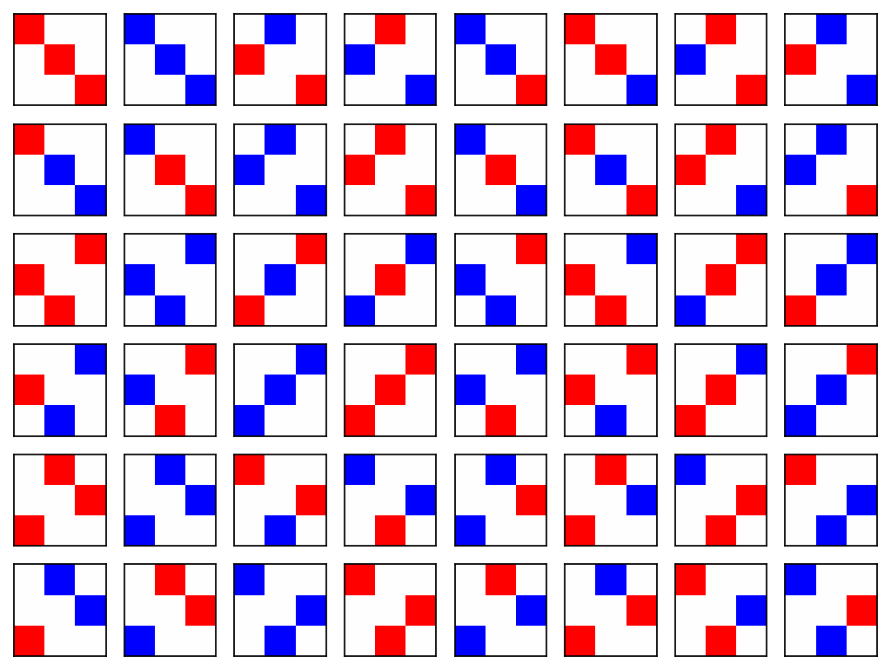
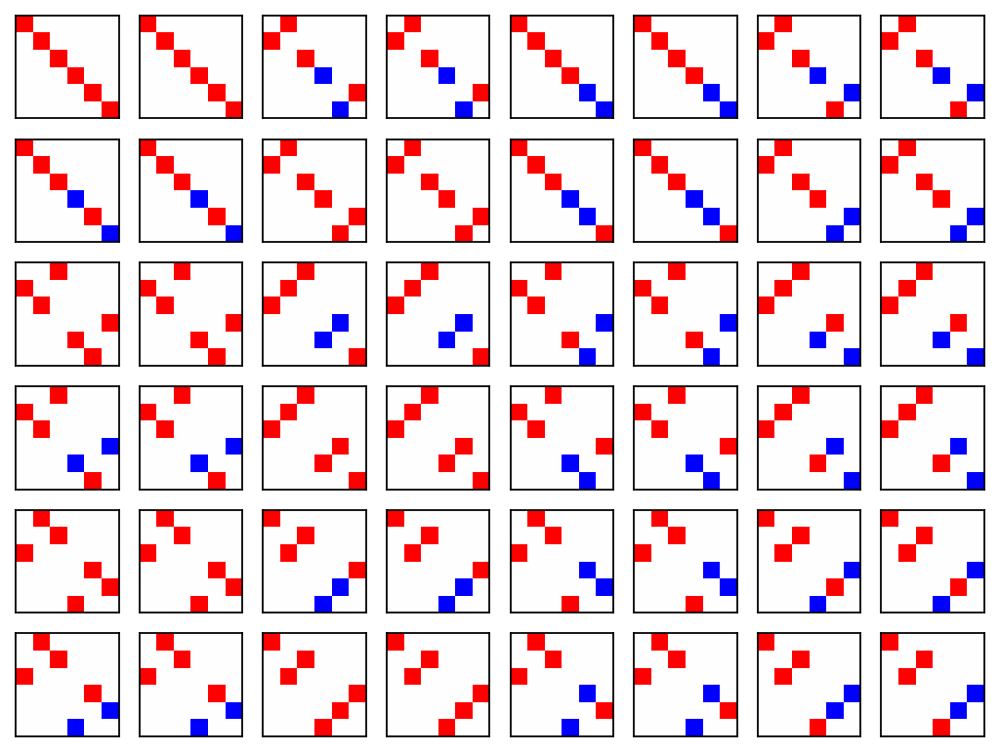

Theoretical background#
This page collects the group theory behind the outputs of CrystOD. Its first part is the shared basis of every command: the representation matrices of the symmetry operations, the characters that reduce them to irreducible representations, the projection operator that turns an irrep into an actual symmetry-adapted function, and the rules that fix the irrep labels. The later parts give, command by command, the background of the individual features — the derivations, conventions and validations that the command pages leave out so that they can show plainly what goes in and what comes out.
Example directory: example/01_wigner_d (testsuite section 1); after pip install: crystod-example 01
Note
The basics below are theoretical background, not a command-line mode:
there is no CLI flag for them. Everything described here is what CrystOD evaluates
internally every time one of the commands is executed; the machinery is exposed
through the Python API only (crystod.operations.wigner_D_real). No prior
familiarity with group theory is assumed.
How to read this page#
Each command page answers what to give, what to run and what comes out; its Theory boxes lead here for the why. If group theory is new to you, read the basics first — they explain the notions that every output uses. The background of the single features follows, one part per command, in the order of the Commands menu.
part |
background for |
|---|---|
What is a representation matrix? to Irrep labels and the frame of a structure |
every command: representation matrices, characters, the projection operator, the irrep labels and the frame they refer to |
spin configurations, double-valued irreps, band irreps from a WAVECAR, electronic band unfolding, dipole selection rules, response tensors, the SALC viewer |
|
direct products and character tables, symmetrized squares and Jahn-Teller modes, ligand fields, basis functions, property tensors, correlation and compatibility, Landau invariants, multi-electron terms, CIF settings, spin-orbit compatibility |
|
the Brillouin-zone polyhedron, the ISO-IR special points, supercell folding |
|
phonon labels, IR and Raman activity, mode effective charges, Raman tensors, modulation, vibration bases, phonon unfolding, the mode viewer |
|
spin bases as axial-vector SALCs, magnetic space groups, collinear classes and altermagnets |
|
displacement parameters and mode amplitudes from a trajectory |
|
molecular SALCs |
|
superlattice reflections of a distorted structure |
|
slab construction, polar slabs, families of Miller indices |
Two more theory pages hold the background of two larger subjects:
How the orbital diagrams are computed (the
numerical engines of crystod --diagram and crystod-mol --diagram) and
Order parameters and isotropy subgroups
(isotropy subgroups, the symmetry-mode analysis, magnetic isotropy subgroups).
What is a representation matrix?#
Take a symmetry operation of a crystal — say a 90-degree rotation about the z
axis, C4z (x -> y, y -> -x, z -> z). Apply it to the three p orbitals, which
have the same shapes as the functions x, y, z:
p_x -> p_y, p_y -> -p_x, p_z -> p_z.
Each orbital turns into a linear combination of the orbitals of the same
shell. Collecting the coefficients into a matrix gives the representation
matrix D(R) of the operation on that shell. CrystOD writes the image of the
j-th orbital into the j-th column: f_j(R^-1 r) = sum_i D[i, j] f_i(r),
the convention in which D(AB) = D(A) D(B) (the transpose, with the images in
the rows, is D(R^-1)). For p orbitals the matrix is then simply the 3x3
rotation matrix itself; its first column says p_x -> p_y:
D^(1)(C4z) = [ 0 -1 0 ] (basis order: x, y, z;
[ 1 0 0 ] column j = image of orbital j)
[ 0 0 1 ]
For d orbitals the same idea gives a 5x5 matrix. Under C4z:
xy -> -xy, yz -> -xz, z^2 -> z^2, xz -> yz, x^2-y^2 -> -(x^2-y^2), so, with
the same column convention (the yz column holds -1 in the xz row, the xz
column +1 in the yz row),
D^(2)(C4z) = [-1 0 0 0 0 ] (basis order: xy, yz, z^2, xz, x^2-y^2;
[ 0 0 0 1 0 ] column j = image of orbital j)
[ 0 0 1 0 0 ]
[ 0 -1 0 0 0 ]
[ 0 0 0 0 -1 ]
These matrices for the orbital shells (any l) are the Wigner D matrices
on real spherical harmonics. crystod.operations.wigner_D_real(l, R) returns
them for an arbitrary O(3) operation R (rotation, rotoinversion, or mirror):
import numpy as np
from crystod.operations import wigner_D_real
c4z = np.array([[0.0, -1.0, 0.0], [1.0, 0.0, 0.0], [0.0, 0.0, 1.0]])
wigner_D_real(1, c4z) # l = 1 (p): equals the 3x3 rotation matrix itself
wigner_D_real(2, c4z) # l = 2 (d): the 5x5 matrix above
np.trace(wigner_D_real(2, c4z)) # character of C4z on the d shell: -1
wigner_D_real(3, -np.eye(3)) # inversion: (-1)^l x identity (parity), here -1 x 1(7)
Key properties (verified in testsuite section 1):
for proper rotations at
l= 1 the matrix equalsRitself;inversion is represented by
(-1)^ltimes the identity — even shells (s, d, …) are unchanged, odd shells (p, f, …) flip sign (the parity of the orbital);the map is a group homomorphism,
D(AB) = D(A) D(B)— performing two operations in sequence is the same as multiplying their matrices;all matrices are orthogonal,
D D^T = 1.
How CrystOD computes D for any l#
Rotation matrices act directly on (x, y, z), so l = 1 is trivial — but how do
we get the 5x5, 7x7, … matrices for d, f, … shells without working out every
monomial by hand? CrystOD follows the classic quantum-mechanics route
(prototyped in matsym/wigner_d.ipynb by Hiroki Koiso):
Split off the inversion. Any O(3) operation is a proper rotation times (possibly) the inversion:
R = det(R) x R_proper. Work with the proper rotationR_proper = det(R) Rfirst.Convert the rotation to Euler angles (alpha, beta, gamma) in the ZYZ convention.
Evaluate Wigner’s formula for the complex D matrix
D^(l)(alpha, beta, gamma)— the standard result for how the complex spherical harmonicsY_l^m(m = -l..l) transform under rotations. This works for any l.Change basis from complex to real orbitals. The real orbitals are fixed linear combinations of
Y_l^m(e.g.p_x = (Y_1^-1 - Y_1^1)/sqrt(2)), so a unitary matrixCconverts the complex D matrix to the real-orbital one:D_real = C D_complex C^-1.Restore the parity. If the original operation was improper (
det(R) = -1), multiply by the inversion eigenvalue(-1)^l.
The production implementation in crystod/operations.py performs these steps
in pure NumPy (no symbolic algebra), with the orbital ordering
p: (x, y, z) / d: (xy, yz, z^2, xz, x^2-y^2) / f: (7 components).
From matrices to irreps: characters and the reduction formula#
The trace of a representation matrix, chi(R) = tr D(R), is called the
character of the operation. Characters are the workhorse of applied group
theory because they do not depend on the basis choice, and because tabulated
character tables list the characters chi_Gamma(R) of each irreducible
representation (irrep) Gamma — the elementary building blocks into which any
representation decomposes. The number of times an irrep appears is given by the
reduction formula
n_Gamma = (1/|G|) * sum_g chi_Gamma(g)* chi(g),
an average over all |G| operations of the group. A complex-conjugate pair
stored as one real irrep in the point-group tables (such as Eg of -3 or
m-3) has norm sum_g |chi_Gamma(g)|^2 = 2|G|, so the reduction divides by
the norm of each irrep rather than by |G|. This is exactly how the
ligand-field splitting of crystod-group --ligand-field (section 14) works:
the characters of the d shell in the
m-3m field, chi(g) = tr D^(2)(g), reduce to Eg + T2g — the familiar
two-below-three splitting of d orbitals in an octahedral crystal field.
In a crystal, a space-group operation g = {R | t} does two things to an
atomic orbital: it moves the atom to a symmetry-equivalent site, and it mixes
the orbital components on that site with D^(l)(R). The character of the
crystal-orbital representation at a k point is therefore the trace of
D^(l)(R) summed over the atoms that g maps onto themselves (modulo a
lattice translation), weighted by the Bloch phase exp(-ik.t) of that
translation. Reducing these characters against the little-group irrep table
gives the irrep content printed by the SALC analysis and the crystal-orbital
diagrams of crystod (sections 2-3).
From irreps to basis functions: the projection operator#
Knowing how many times an irrep appears is half the story; the other half is what the symmetry-adapted functions look like. They are extracted with the projection operator
P^(Gamma) = (d_Gamma/|G|) * sum_g chi_Gamma(g)* O(g),
where O(g) is the representation matrix of g on some convenient trial basis
and d_Gamma is the irrep dimension. Applied to a trial function, P^(Gamma)
kills every component except the part transforming as Gamma.
The workflow — prototyped in matsym/get_basis_functions.ipynb by Hiroki
Koiso — is the engine of crystod-group --basis / --generate-basis
(sections 15 and 17 of crystod-group):
get the symmetry operations from spglib and the irreps from spgrep;
build the representation matrices
O(g)of the trial basis — for the linear monomials (x, y, z) these are the rotation matrices themselves; for the quadratic monomials (x^2, y^2, z^2, xy, yz, zx) a 6x6 matrix follows from substituting the rotated coordinates into each monomial, and so on;project with
P^(Gamma)(spgrep’sproject_to_irrep) and read off the symmetry-adapted polynomials — e.g. in m-3m the quadratic monomials separate intox^2+y^2+z^2(A1g),(2z^2-x^2-y^2, x^2-y^2)(Eg), and(xy, yz, zx)(T2g).
It is worth looking at the matrices of step 2 before projecting. The two
galleries below (regenerated from the notebook by
doc/make_rep_matrix_figures.py) show O(g) for all 48 operations of the
Pm-3m point group of ScF3 at the Gamma point — one small panel per operation,
with red = +1, blue = -1, white = 0.


The 48 representation matrices on the linear basis (x, y, z) — i.e. the 3x3 rotation matrices themselves. Red = +1, blue = -1, white = 0.#
Two things are immediately visible. First, every panel has exactly one colored cell per row and per column: for a high-symmetry (cubic) group the operations do nothing more exotic than permute the basis functions and flip signs — these are signed permutation matrices (the first panel, the identity, is the plain red diagonal). Second, no single monomial stays put in every panel, which is the visual way of saying that x, y, z individually are not symmetry-adapted: they mix, and only the projection operator can disentangle the combinations that transform cleanly.


The same 48 operations on the quadratic basis (x^2, y^2, z^2, xy, yz, zx) — now 6x6 signed permutation matrices.#
The quadratic gallery shows one more feature: a block structure. The
upper-left 3x3 block (x^2, y^2, z^2) and the lower-right 3x3 block
(xy, yz, zx) never mix — a rotation can turn x^2 into y^2, or xy into -yz, but
never a square into a product. Note also that the squares block is always
red: a square can never acquire a minus sign, which is why the totally
symmetric average x^2+y^2+z^2 (A1g) survives. The projection operator is
nothing but a weighted average of these 48 panels — multiply each panel by the
irrep character chi_Gamma(g)* and sum — and the block structure you see here
is exactly what reappears in the result: the squares block yields
A1g + Eg, the products block yields T2g, reproducing step 3 above (and the
crystod-group --generate-basis --order 2 output of section 17 of
crystod-group).
The SALCs of the main crystod command and of its SALC viewer (section 6 of
crystod) come from the same projection with
the trial basis replaced by the atomic orbitals on all symmetry-equivalent
sites — O(g) then combines the site permutation, the Bloch phases, and
D^(l)(R) from section 1.2 above. And replacing D^(1)(R) = R by the
axial-vector
representation det(R) R (magnetic moments do not flip under inversion) turns
the same machinery into the spin-multipole bases of crystod-mag (section 42).
Further reading: B. Souvignier, “Representations of crystallographic groups”
(MaThCryst summer school notes, Nancy 2010);
the spgrep documentation, e.g. the
symmetry-adapted tensor example.
Run python demo_wigner_d.py in example/01_wigner_d for a printed walk-through.
Irrep labels and the frame of a structure#
Every space-group irrep label that CrystOD prints — the SALC analysis,
--atomic-orbital and --diagram of crystod, crystod-phonon --irreps,
--vibration, --vector and --modulation, crystod-mag and the
space-group modes of crystod-group — comes from the bundled ISO-IR tables of
the ISOTROPY Software Suite (Miller-Love convention: GM4-, R5-, DT5,
LD3). The small irreps themselves are computed by spgrep, and each one is
named by comparing its characters with the tabulated characters at its k
point. The tables hold no double-valued irreps; those of a spin-orbit
treatment (crystod --spinor, --extract-irrep and the overlap engine on
spin-orbit runs) are named from the single-valued labels of the same k point,
with the numbering of Bradley & Cracknell (1972), Table 6.5, apart from two
stated exceptions
(Double-valued irreps), so they
follow the same frame; they are fixed at the representative arm of the star
of k and carried to the other arms by conjugation, so that, like the
single-valued labels, they do not depend on the arm.
A label is defined only relative to a description of the crystal in the
ISO-IR standard setting, and the setting leaves a choice. Moving the origin to
another point of the same site symmetry (Sr or Ti at the origin of Pm-3m, Si
on Wyckoff 8a or 8b of Fd-3m) or turning the axes by a lattice rotation that
maps the space group onto itself (the sixfold axis of P-6m2, the twofold axis
that reverses the polar axis of P4) gives another standard description — an
element of the Euclidean normalizer of the group — and it permutes labels at
zone-boundary points: the octahedral tilt of SrTiO3 is R5- with Sr at the
origin and R4+ with Ti at the origin. CrystOD fixes the frame by three
rules, so that one structure gets one set of names in every command:
A cell that is already in the ISO-IR setting keeps its own axes and origin: the conventional cell, its primitive cell in the standard centring, and a diagonal supercell of either (n1 x n2 x n3 multiples of its axes with the same origin, of any size). The setting chosen in the input file is respected.
Any other cell gets a canonical frame of the crystal (a shifted origin, rotated or re-based axes, a non-diagonal supercell such as sqrt2 x sqrt2 x 1, a supercell of such a cell). The candidates are spglib’s standard frame composed with the proper lattice rotations that map the group onto itself and with the origin shifts of the normalizer; frames that keep the cell’s own origin are preferred when there are any (when that origin is the origin of a standard description, such as Sr or Ti in SrTiO3); among the candidates the one with the smallest sorted list of atomic positions is taken, coordinates being compared, and reduced into the unit cell, at 0.71, 0.071 and 0.0071 times the symmetry tolerance (not round multiples of it, so that coordinates given to a few decimals cannot fall exactly on a level). Along a polar axis, where the origin is free, it is put on an atom of the species with the smallest atomic number (centring copies included).
A working cell derived from the input cell (phonopy’s primitive cell, the spglib standardization) inherits the frame of the input cell.
input |
rule |
labels |
|---|---|---|
|
1 |
R tilt |
the same with Ti at the origin |
1 |
R tilt |
the same shifted by (0.1234, 0.2345, 0.3456) |
2 |
R tilt |
|
1 |
R spaces |
2x2x2 and 2x1x1 supercells of |
1 |
Ti d at R |
2x2x1 supercell of MoS2 (P-6m2) |
1 |
Mo d at M |
sqrt2 x sqrt2 x 1 supercell of |
2, own origin kept |
R tilt |
the same supercell shifted by (0.1234, 0.2345, 0.3456) |
2 |
R tilt |
|
1 |
Cu p at A |
sqrt2 x sqrt2 x 1 supercell of |
2 |
Cu p at A |
Inputs whose origin is a general point (shifted copies of the crystal) are
therefore labelled in one frame, whatever their shift, orientation, basis or
cell size. An input that is not in the ISO-IR setting but has its origin at
the origin of a standard description keeps that origin under rule 2 and is
named accordingly, so it and a shifted copy of it can name a mode
differently: the unshifted sqrt2 x sqrt2 x 1 supercell of SrTiO3 has the
Sr-origin tilt R5-, its shifted copy R4+. A diagonal supercell of a cell
in the ISO-IR setting keeps that cell’s axes and origin and is labelled like
the cell; a non-diagonal supercell is labelled by rule 2 and can get names
that differ from the cell’s by a normalizer element (A3 for A4 and R+
for R- in CuO). Two inputs that are both in the ISO-IR setting but differ by
a normalizer element (Sr or Ti at the origin) name the same mode differently,
so compare labels between inputs given in the same setting.
k points: star arms, k + G, lines and -k#
Any arm of a star and any copy k + G of a k point carry the same name and
labels. On a symmetry line or plane the ISO-IR label depends on the value of
the line parameter, and one k point has one value per arm and per copy k + G.
The label is evaluated at the canonical value, the smallest parameter (the
positive one when the two signs are equally small), so a k point gets the
same label however it is written: crystod-group --table --sg 216 --kpoint -1/4 -1/4 0 and --kpoint 3/4 3/4 0 print the same rows (DT4 with the
characters 1, -1, -1, 1), because DT of F-43m at the conventional (0,0,-1/2)
is evaluated on the arm (0,0,-a) at a = 1/2. On a line that no symmetry
element reverses (LD of P2_1, DT of P6_3) the two signs belong to different
stars, k and its -k partner (next paragraph).
In a group without inversion the star of -k can differ from the star of k.
At a special point ISO-IR tabulates one of the two (P of I-4, not PA). On a
line, a plane or the general point the ISO-IR entry covers both signs of the
parameter when -k lies on the same line or plane at the opposite parameter
(LD of P2_1 and P4, DT of P6_3, GP), and CrystOD gives the ISO-IR name to the
star at the canonical parameter (the smallest, the positive one first): that
is the name ISOTROPY gives when that parameter value is entered, its
parametrization of every line and plane being the same as that of ISO-IR.
Where -k lies on another line (the line P of P3 through K and H, whose -k
partner runs through K’ and H’), both signs of the parameter of P keep the
name P. The other star, the -k partner, is named as the ISOTROPY software
names it in its physically irreducible labels (P1PA1, LD1LE1, DT6DU6,
GP1GQ1): LE for LD, DU for DT, SN for SM, GQ for GP, the suffix A for the
other letters (PA, KA, HA, WA, BA, …), and the suffix C, as ISOTROPY uses
it, for P, B, C, D and E in P3, P3_1 and P3_2, for P and C in P31m and P31c,
for D in P3m1 and P3c1 and for B and E in P-6. The partner irreps carry the
numbers of the tabulated ones and are their complex conjugates: PA1 is the
complex conjugate of P1, LE1 that of LD1. Over all 230 groups these
partners are exactly the k types whose -k lies outside the star.
crystod -c 82_PPOSCAR_AlPO4 --element Al --orbital p --kpoint -0.25 -0.25 -0.25 prints the k point PA and 1.0 [PA2(1)] + 1.0 [PA3(1)] + 1.0 [PA4(1)]; crystod-group --table --sg 173 --kpoint 0 0 7/12 prints the k
point DU of P6_3 with the rows DU2, DU1, DU6, …, the conjugates of
DT2, DT1, DT6, … at (0,0,5/12). crystod-group --product, --parent
and --supergroup-cif use the same names (M1 x P1 = PA1 in I-42d,
P1 x X1 = LD1 + LD2 + LE1 + LE2 in I4, the pairs P1PA1, LD1LE1,
GP1GQ1).
Names and labels refer to one frame. The special points of the ISO-IR
tables that a command lists or surveys (crystod and --atomic-orbital,
--diagram, --visualize without --kpoint, crystod-phonon --irreps,
--vector and --subgroup, the crystod-mag survey, and the MCP tools
crystod_phonon_irreps and crystod_crystal_orbital_irreps) are named in
the frame of the labels, a point that is there the -k partner of a
tabulated one being replaced by its -k; a name given to them (--kpoint P,
--qpoint P) is resolved in that frame; and coordinates given on the
command line are named by the same labeller. An input outside the ISO-IR
setting can differ from spglib’s basis by a normalizer element that turns P
into PA: 82_PPOSCAR_AlPO4 shifted by (0.0731, 0.1593, 0.2417) lists
P [-0.25, -0.25, -0.25] above 1.0 [P1(1)] + 1.0 [P2(1)] + 1.0 [P3(1)]
(Al p), analyzes that point for --kpoint P, and names (1/4, 1/4, 1/4)
PA, with the labels PA1, PA2, PA3; a species-sorted 2x2x2 supercell
of 143_PPOSCAR_HgBr, which spglib re-bases to (-b, -a, -c), lists H with
H1 + H2 + H3 as the cell does. Negative coordinates can be given back as
printed, as decimals or as fractions (--kpoint -1/4 -1/4 -1/4).
The seekpath lists (crystod-phonon --vibration, crystod-mag --qpoint,
crystod --star-of-k and --visualize --kpoint) keep seekpath’s names
(GAMMA, H_2, …). A seekpath point to which the frame of the labels
gives another ISO-IR type than spglib’s frame, in which seekpath names it,
is moved to the point that has that type (the seekpath P of the shifted
AlPO4 above is listed at (-1/4, -1/4, -1/4), with P labels), and the
coordinates of a listed point are named as the list names them. The k-path
of crystod-phonon --irreps --all-irreps cannot move its endpoints; an
endpoint of that kind is printed with its ISO-IR name (GM-X-PA-N-... for
the shifted AlPO4). seekpath’s letters are not the ISO-IR names in every
lattice: for a triclinic cell its X, Y, Z, R, T, U and V denote other points
than the ISO-IR letters do. The seekpath Z of 1_PPOSCAR_RbBe2F5 is
(-1/2, 0, 0), whose vibrations carry the label X1, while crystod --kpoint Z analyzes the ISO-IR Z, (0, 0, 1/2), with Z1; give such a point by its
coordinates when the two commands are compared.
Limits of the frame rules#
Rule 2 keeps the cell’s own origin when that origin is the origin of a standard description. An unshifted description with rotated or re-based axes, or a non-diagonal supercell, can therefore name a mode differently from a shifted copy of itself: the sqrt2 x sqrt2 x 1 supercell of SrTiO3 has the tilt
R5-with Sr at the origin andR4+when shifted. The labels agree among descriptions whose origin is a general point.Rule 1 follows the axes of the input, including the sense of a polar axis: a P4 cell and the same cell with the polar axis reversed, both in the ISO-IR setting, exchange the complex pair
GM3/GM4. It also accepts the (b, -a, c) setting of the C-centred orthorhombic groups whose symbol that exchange leaves unchanged (C222_1, Cmm2, Ccc2, Cmmm and Cccm, SG 21, 35, 37, 65 and 66): the supercell (a+b, -a+b, c) of the conventional cell is a 2x2x1 supercell of the primitive cell of that setting, and its names follow those axes (GM3andGM4, for example, exchanged against the standard setting).A P1 cell is in the ISO-IR setting whatever its axes and origin, and a P-1 cell whatever its axes when its origin is an inversion centre (rule 1), so their k-point names follow the axes of the input. A non-diagonal supercell of a P1 cell and a P-1 cell whose origin is a general point take rule 2.
A double-valued irrep follows the single-valued labels, except within a tied complex-conjugate pair (the little co-groups 2, m, 2/m, 32, 3m and -3m), whose order is fixed by the axes of the frame (at the representative arm of the star; the other arms and k + G inherit it by conjugation). Two frames that differ by a normalizer element and give every single-valued label the same name can therefore exchange such a pair: a P2/m cell given in the basis (-a,-b,c), a P3m1 or P-31m cell translated rigidly (see Double-valued irreps).
Near the symmetry tolerance an accidental lattice symmetry (a metric within the tolerance of a higher one) can enter or leave the candidates of rule 2 and switch the canonical frame.
An orthorhombic group whose symbol is invariant under a cyclic permutation of the axes (Pbca) with a = b exactly can still be labelled differently for different descriptions: that permutation is not a rotation of the lattice and is not among the candidates.
crystod: crystal orbitals, bands and response tensors#
Background for the crystod page (sections 2-7). The numerical engines of the crystal-orbital diagram are described in How the orbital diagrams are computed.
Spin configurations and the axial-vector representation (crystod --axial)#
Command: crystod --axial — Spin configurations
Why the spin configurations of the sites of one element decompose as they do,
how their labels are chosen, and how the decomposition is checked. With
crystod -c POSCAR --element EL --axial every site of the element carries one
axial vector (Rx, Ry, Rz), a magnetic moment, and the decomposition is that of
the magnetic representation, i.e. the irreps of the spin configurations of
those sites.
The rotation character of the axial vector is that of the p shell times
det(R) (the same on a proper rotation, no sign change on an improper one:
inversion keeps a spin), so on an inversion centre the irreps are those of
--orbital p with the parity flipped. This is the axial-vector representation
det(R) R in place of D^(1)(R) = R, described with the projection operator
above, applied to the SALC decomposition. A magnetic moment is single-valued,
which is why --axial does not take --spinor.
The labels are the ordinary ISO-IR irreps of the little group, without the m
prefix ISOTROPY gives the time-odd irreps (GM4+ of SrTiO3 with Ti on the
origin is mGM4+ there), as in crystod-mag. Because a spin
configuration is real, at a time-reversal-invariant k point a complex irrep and
its conjugate are printed once under the pair label with the real dimension,
2.0 [GM3+GM4+(2)] for the Ti sites of P4/m Ti2Ga3, where --orbital lists
GM3+(1) and GM4+(1) separately. These are exactly the terms of the survey
of crystod-mag -c POSCAR --element EL. In Python,
CrystalOrbital(cell).irreducible_decomposition(k, "Ti", "axial") returns the
unmerged irreps.
Testsuite section 2 compares the decomposition, at every special point and for
every element, with the explicit spin-representation matrices of crystod-mag
on one structure per space group: 23 groups by default, all 230 (4050 cases)
with CRYSTOD_AXIAL_SWEEP=1.
Double-valued irreps and their names (crystod --spinor)#
Command: crystod --spinor — Double-valued irreps
How CrystOD names the double-valued (spinor) irreps of a spin-orbit treatment,
how the names compare with Bradley & Cracknell’s and with the Bilbao tables,
and what was checked. With --spinor every orbital carries spin 1/2 and the
little groups are the double groups: the crystal orbitals are decomposed into
the double-valued irreps, those of a calculation with spin-orbit coupling. The
ten Ti 3d spin-orbitals of SrTiO3 at Γ, for example, are the scalar ones times
the spin-1/2 representation D(1/2): e_g (GM3+(2)) becomes -GM8+(4), and t2g
(GM5+(3)) -GM7+(2) + -GM8+(4), the doublet and the quartet that spin-orbit
coupling splits t2g into.
The naming rule of the double-valued irreps#
The bundled ISO-IR tables hold single-valued irreps only, so CrystOD names the
double-valued irreps itself, on the ISO-IR labels of the same k point in the
same frame, with the numbering of Bradley & Cracknell (1972), Table 6.5
(Koster’s Γ numbers), apart from two exceptions given below. As in Bradley &
Cracknell the index continues after the single-valued irreps and parity
partners share it (Γn±); the overbar is written as a leading - (as in the
Bilbao tables). One rule serves --spinor, --atomic-orbital --spinor,
--extract-irrep
and the WAVECAR-overlap engine
(crystod.wavecar_irreps.double_valued_names in Python), so the four name the
irreps of one cell alike:
Fingerprint. A double-valued irrep D is identified by the decomposition of D x D(1/2) into the single-valued ISO-IR irreps at k.
Name.
-K<n><p>: the overbar of the double-group label written as a leading-(R̄6+ is-R6+), the ISO-IR k label (GM,R,DT, …), an index n, and the parity suffix+/-when the single-valued irreps at k carry one (the parity is read off the fingerprint). Parity partners share n.Index. n continues after the largest single-valued index at k. The classes of irreps (a parity pair is one class) are numbered in the order of their dimension, then of their fingerprint (lexicographic in the single-valued labels).
Ties. Two one-dimensional irreps that are complex conjugates of each other can have the same fingerprint: the pair of the little co-groups 2, m and 2/m, the one-dimensional pair of 32, 3m and -3m, and their analogues at other k points. They are ordered by their characters at the first operation (in a canonical order of the operations) where the two differ, +i before -i, with every two-fold rotation lifted to SU(2) as the rotation by +pi about its axis [uvw] in the ISO-IR frame, the first nonzero component positive, except that in 2, m and 2/m the unique axis is lifted as +pi about -[uvw]: that is Bradley & Cracknell’s C2z = (C4z-)^2, so
-GM3is their (Koster’s) Γ3, the irrep with chi(C2z) = +i in their lift. At Γ of P2/m,-GM3+and-GM3-have chi(2) = -i in the lift about +[uvw] (+i in B&C’s),-GM4+and-GM4-have +i. The C2’ axes of 32, 3m and -3m keep the lift about +[uvw], which makes-GM4B&C’s Γ5 (1E).Arms of a star. The names are fixed at the representative arm k0 of the star of k, the arm the ISO-IR table lists first (at the parameters of k on a line or plane), and carried to every other arm and to every copy k + G by conjugation, D’(h) = D(g^-1 h g) with g k0 = k; at a k point named through -k (the ‘A’ partners, LE of LD) the irreps are the complex conjugates of those at k0, under the same index. An irrep therefore has one name on the whole star, as its single-valued labels have (
crystod.isoir.IsoIRLabeler.representative_k,crystod.wavecar_irreps.transport_double_valued_names).Lift. Otherwise the SU(2) matrices U_g are spgrep’s (rotation angle in [0, pi], U(-R) = U(R): inversion does not act on the spin), and the spin factor of the orbital characters is tr U_g.
--show-irrep-tableprints the double-valued character table in this lift, with the names.
Double-valued irreps at the Gamma point and Bradley and Cracknell Table 6.5#
At Γ of Pm-3m (O_h) the single-valued irreps are GM1± to GM5±, so the
double-valued ones are -GM6 to -GM8:
name |
dim |
D x D(1/2) |
first in D(j) |
Koster |
|---|---|---|---|---|
|
2 |
GM1± + GM4± |
j = 1/2 (D(1/2) itself, E1/2) |
Γ6± |
|
2 |
GM2± + GM5± |
j = 5/2 |
Γ7± |
|
4 |
GM3± + GM4± + GM5± |
j = 3/2 |
Γ8± |
The order by dimension and fingerprint gives, at Γ (with the parity suffixes in the centrosymmetric classes), next to Bradley & Cracknell’s Table 6.5:
point group of k |
double-valued irreps |
B&C Table 6.5 |
|---|---|---|
m-3m, 432, -43m |
|
Γ6, Γ7, Γ8 |
4/mmm, 422, 4mm, -42m |
|
Γ6, Γ7 |
6/mmm, 622, 6mm, -6m2 |
|
Γ7, Γ8, Γ9 |
m-3, 23 |
|
Γ5, Γ6, Γ7 |
mmm, 222, mm2 |
|
Γ5 |
2/m, 2, m |
|
Γ3, Γ4 |
4/m, 4, -4 |
|
Γ5, Γ6, Γ8, Γ7 |
6/m, 6, -6 |
|
Γ7 to Γ12 |
-3m, 32, 3m |
|
Γ5, Γ6, Γ4 |
-3, 3 |
|
Γ4, Γ5, Γ6 |
-1, 1 |
|
Γ2 |
Bradley & Cracknell. C. J. Bradley and A. P. Cracknell, The Mathematical Theory of Symmetry in Solids (Clarendon Press, Oxford, 1972), Tables 6.5 (the double point groups, with the Γ numbers of G. F. Koster, J. O. Dimmock, R. G. Wheeler and H. Statz, Properties of the Thirty-Two Point Groups, MIT Press, 1963), 6.13 and 6.14 (the double-valued representations of the space groups and their labels). At Γ the names agree with Table 6.5 for 26 of the 32 point groups. They differ in two families:
32, 3m, -3m. The classes are ordered by dimension (the order of Miller & Love, 1967, which is also that of the CDML and Bilbao tables and of the usual labels at L of the fcc lattice,
-L4,-L5one-dimensional,-L6two-dimensional), so the two-dimensional E1/2 is the last,-GM6, where Table 6.5 has it first, Γ4; the one-dimensional pair-GM4,-GM5is B&C’s Γ5, Γ6.4, -4, 4/m.
-GM7and-GM8are Table 6.5’s Γ8 and Γ7. In the cyclic co-groups 3, -3, 4, -4, 4/m, 6, -6 and 6/m the complex pairs are not ties: their order follows the single-valued ISO-IR labels through the fingerprints. Bradley & Cracknell number these pairs inconsistently themselves: for the group 4, Table 6.5 has 1E1 = Γ6 and 2E1 = Γ5, Table 6.14 (G8^1 a) 1E1 = Γ5 and 2E1 = Γ8; the Γ indices of Table 6.5 and of Tables 6.13 and 6.14 disagree at Γ of 3, 4, -4, 6, -6 and 6/m, and 4/m read through Tables 6.13 and 6.14 agrees with CrystOD. CrystOD keeps the order of the ISO-IR labels there.
The NOTE: line that --spinor prints under the irreps of a k point
(described with the command) marks these cases: where the proper parts of the
little co-group form the point group 32 (the first family), and where they
form a cyclic group of order 3, 4 or 6 and the irreps at k hold a
complex-conjugate pair (the cyclic co-groups, whose pairs Bradley & Cracknell
number inconsistently).
Checks of the double-valued names#
For all 32 crystallographic point groups at Γ the names pass the checks of
group theory: the squared dimensions add up to the order of the group, the
names are unique, the indices start after the single-valued ones, every +
irrep has its - partner, and the names do not change under a rigid rotation
of the crystal, another primitive setting or a supercell, in the ISO-IR frame.
Away from Γ they agree with the literature at L of Fd-3m (-L4±, -L5±
one-dimensional, -L6± two-dimensional), at L and X of F-43m, at X, R and M
of Pm-3m and at K of P6_3/mmc. On every arm of the stars of the special
points and of a point on every symmetry line of the structures in
example/test_POSCARs, and at k + G, each irrep carries the name of its
conjugate at the representative arm, and at -k the conjugate irrep carries
the index of the irrep at k. A double-valued irrep that cannot be named
keeps the generic key irrep_i(dim), and a NOTE: line under the irreps
gives the reason; on the special points of the structures in
example/test_POSCARs every irrep is named.
Limits of the double-valued names#
The names are not the Bilbao Crystallographic Server (BCS) numbering, which numbers all double-valued irreps at k in one sequence without a parity suffix: at Γ of Pm-3m, CrystOD’s
-GM6+,-GM6-,-GM8+and-GM8-are BCS’s-GM6,-GM8,-GM10and-GM11. Every--spinorrun says how the names are numbered in a three-line remark (its text changed in v0.4.7: it used to call the names CrystOD’s own convention and now gives the Bradley & Cracknell numbering and its exceptions). The overlap engine can put IrRep’s Bilbao names on its levels (--vasp-irrep-json).Where the numbering differs from Table 6.5 (32, 3m, -3m and 4, -4, 4/m above), and anywhere away from Γ, compare a name with another table through the characters (
--show-irrep-table) or the fingerprint, not through the number: the comparison with Bradley & Cracknell is made at Γ, and their Tables 6.13 and 6.14 are not followed point by point.The order of a tied pair is relative to the ISO-IR frame in use (it no longer depends on the arm of the star or the copy k + G that is given). Frames related by an element of the Euclidean normalizer (an origin shift, an equivalent basis such as (-a,-b,c), a 60-degree rotation in the trigonal groups) keep every single-valued label but can swap such a pair, as they can swap a complex single-valued pair (see Irrep labels and the frame of a structure). The decomposition line is unaffected when the two have equal multiplicity, as always at Γ and the other time-reversal-invariant points for real orbitals; character tables and band labels can swap. Compare names between inputs given in the same setting.
Band irreps from the plane waves of a WAVECAR (crystod --extract-irrep)#
Command: crystod --extract-irrep — Band irreps of a VASP run
How the bands of one finished VASP run are labelled straight from the plane-wave coefficients of its WAVECAR, and how a level that holds several irreps is classified. No crystal-orbital diagram, no sublattice runs and no PROCAR are involved.
The labelling engine is the one of the
WAVECAR-overlap engine
(crystod.wavecar_irreps), so the labels are CrystOD’s ISO-IR labels — the
names every other command prints — and, for a spin-orbit run, the
double-valued names of crystod --spinor (-R6+; the convention is in
Double-valued irreps and their names).
Levels, degeneracy and time reversal in the band irreps#
Bands are grouped into levels by --degeneracy-tol (default 1 meV, the
overlap engine’s): bands within the window of the first band of a level are
one level, whatever the irreps of its bands. Every level is decomposed by its
characters; a level of several irreps is labelled A/B and classified by
Wigner’s test of time reversal at that k point (time reversal combined with
each space-group operation that takes k to −k), and what the engine flags is
reported in the note column of the table, never hidden. Two irreps that time
reversal makes degenerate are Wigner’s case c (-L4/-L5 at L of zincblende
with spin-orbit coupling, DT3/DT4 along Γ–X of zincblende without it); two
copies of one irrep that time reversal makes degenerate are case b (the
Kramers pairs -GP2/-GP2 of a centrosymmetric spin-orbit run at a general k
point); irreps within the degeneracy window that no symmetry holds together
are an accidental degeneracy.
A complete level always has the degeneracy of its irrep (or the summed
dimensions of A/B), so the degeneracies of a k point add up to NBANDS. VASP
often returns the two bands of a time-reversal pair as pure states, one irrep
each, and the labelling engine then names each band on its own (the overlap
engine keeps it that way); --extract-irrep still lists them as one level,
and the per-band irreps are in the Python result (BandLevel.parts).
Time reversal is assumed when a level is classified: a magnetic spin-orbit run
(vasp_ncl with an ordered moment) breaks it, and its split pairs then carry the
time-reversal partner ... not in this level note.
Spin channels and spin-orbit runs in the band irreps#
Each channel of an ISPIN = 2 run is labelled by the irreps of the space group
of the POSCAR, which is exact for a ferromagnet; in an antiferromagnet whose
spin sublattices are one species in the POSCAR the levels that the magnetic
order splits come out unassigned.
A spin-orbit (vasp_ncl, LSORBIT) run is recognised from the WAVECAR (each
band record holds two spinor components): one band holds one electron and the
levels carry the double-valued irreps (-GM8+, -R6+; the CsPbI₃
valence-band maximum is -R6+, its conduction-band minimum -R6-), named as
by crystod --spinor and the overlap engine: Bradley & Cracknell’s Table 6.5
numbering with the exceptions given in
Double-valued irreps and their names,
not the Bilbao numbering, the same on every arm of a star and at k + G, and
where two complex-conjugate irreps tie (little co-groups 2, m, 2/m, 32, 3m and
-3m) their order is relative to the ISO-IR frame of the run’s POSCAR. They have
no Mulliken symbols.
Electronic band unfolding (crystod --unfold)#
Command: crystod --unfold — Electronic band unfolding of two VASP runs
The phonon counterpart, with the same conventions for M, the images and the settings, is Phonon band unfolding.
How crystod --unfold splits each Bloch state of a low-symmetry (child) VASP
run over the parent wave vectors it unfolds onto, why the weight of a
degenerate level does not depend on the basis VASP returns, which parent path
points a child run covers, and how the energy zero, the energy range and the
alignment diagnostic of the summary are defined.
A distorted phase and its high-symmetry parent are usually computed side by
side: the parent in its small cell, the low-symmetry child in its own,
larger cell. The child’s bands then come out folded into its smaller Brillouin
zone: I4/mcm SrTiO3 (10 atoms, two cubic cells) has twice the bands of cubic
SrTiO3 at every k, and which of them carries which cubic band cannot be read
off its band plot. --unfold reads the two finished band runs and draws the
child’s bands in the Brillouin zone of the parent: every child Bloch state at
the child wave vector K is split over the N = det M parent wave vectors
k = M^-1 K + g_i it unfolds onto, with the share of its plane-wave
coefficients on each (V. Popescu and A. Zunger, Phys. Rev. B 85, 085201
(2012); the scheme of fold2Bloch, O. Rubel, A. Bokhanchuk, S. J. Ahmed and
E. Assmann, Phys. Rev. B 90, 115202 (2014)). No new VASP run is needed: the
two runs are the ordinary band calculations of the two phases, each along its
own path, and the parent eigenvalues are drawn over the unfolded child wherever
the two runs sample the same parent k. The numbers quoted below are those of
the SrTiO3 example of the command page (I4/mcm in its 10-atom primitive cell
unfolded onto Pm-3m, both runs with METAGGA = LAK and ENCUT = 550).
Plane-wave weights of an electronic band#
The conventions are those of crystod-phonon --unfold: lattice vectors are
rows, A_child = M A_parent with an integer matrix M, N = det M, and
fractional wave vectors transform as K = M k (k = M^-1 K in the parent).
The N parent wave vectors g_i with M g_i integer are those that fold onto
the child Γ point; they are named with their ISO-IR labels in the parent (here
g0 = GM and g1 = R, the k point of the condensed rotation). A child plane wave
K + G, with G an integer triple of the child reciprocal basis as the WAVECAR
lists it, is a parent plane wave at M^-1 (K + G) = M^-1 K + g_i with
g_i = M^-1 G mod 1. The plane waves of a child state therefore fall into N
cosets, and the weight of band n on image i is
w_i(n) = sum_{G in coset i} sum_spinor |C_n(G)|^2 / sum_G sum_spinor |C_n(G)|^2
The coset of every G is integer arithmetic, so nothing is interpolated. The WAVECAR holds the PAW pseudo wave functions, whose plane-wave norm is not 1 (sum |C|^2 between 0.295 and 1.548 on these runs; the summary prints the range): every band is normalised before the split, and the one-centre (augmentation) part of the PAW wave function is neglected, as plane-wave unfolding codes do. The weights of a band add up to 1 over its images; the summary prints the largest deviation (5.4e-15 here), and above 1e-10 the run stops with an internal ERROR. A spin-orbit (vasp_ncl) run adds both spinor components. The weights do not depend on the occupations, so a metallic run is unfolded in the same way.
Level weights of a degenerate electronic level#
Bands within --degeneracy-tol (default 1 meV, single linkage) form one
level. Inside a degenerate level the weights of the single bands depend on the
basis VASP happens to return, so a level of deg bands carries the level weight
W_i = Re Tr(S^-1 P_i), S = C C^H, P_i = C Pi_i C^H
with C the deg rows of plane-wave coefficients of the level and Pi_i the mask
of coset i. W_i adds up to deg over the images, equals w_i(n) for a single
band and the sum of the band weights when the rows are orthogonal, and does not
change under any mixing of the degenerate bands: mixing all 1070 degenerate
levels of the I4/mcm run with random unitary matrices changes W by at most
2.7e-15, while the weights of the single bands change by up to 0.98. The
tables, the figure (marker area W, color W/deg), the parent-path view, the
checks and the YAML file use W; the .dat file holds both. The share printed
in the vertex tables, w(k) = W_k / deg, is the share of the level’s spectral
weight on the parent image k (the level carries deg x w).
Equivalent settings in electronic unfolding#
Only the integer matrix M enters the weights; the origin shift and the
rotation between the two frames do not. The child sits in the parent in
several equivalent settings (24 here), which describe one crystal in
differently oriented frames: another setting puts another arm of a parent star
on an image, with the same weights (with --trans-mat 1 0 1 1 0 -1 -1 1 0
the child X point unfolds onto X (0, 1/2, 0) and M (1/2, 0, 1/2) instead of
X (1/2, 0, 0) and M (0, 1/2, 1/2)).
--trans-mat chooses one, as in crystod-phonon --unfold; a matrix that is
not one of them is refused with the list of the valid ones.
The strain line of the setup block compares the parent cell as it sits in
the child, inv(M) A_child, with the parent run’s cell, and frame rotation
is the rigid rotation between the two frames. Neither enters the weights, but a
strained child is compared with its parent at the same fractional k, not at the
same Cartesian k.
Symmetry transport of the electronic unfolding weights#
Two k points of the child related by an operation of the child are related
in the parent as well: if K' = R K for an operation R of the child point
group (on fractional reciprocal coordinates, (W^-1)^T of the real-space
rotation W; time reversal adds -R), the weight of the parent point k_p at K
is the weight of M^-1 R M k_p at K’. This symmetry transport serves a
parent path point whose K = M k_p is not in the child list but one of its
images under the child point group or time reversal is. The summary checks
it on the equivalent points of the child path (S|S0 and R|G of the example).
Where an operation of the child (or time reversal) exchanges the images at K,
as at P and N of the body-centred tetragonal child, every share is 1/N by
symmetry; such points are counted apart in the summary (mixed levels: the
whole P-N leg of the example). A level that shows other shares there is one
band of a degenerate pair that VASP split by more than --degeneracy-tol (a
larger tolerance joins it). A vertex that an operation of the child or time
reversal relates to an earlier one (S0 to S, G to R) has the shares of the
earlier vertex with the images permuted.
An ISPIN = 2 child is a different case: its POSCAR symmetry need not be a
symmetry of the spin density, so only K and -K relate child k points (for the
parent-path view, the overlay and the symmetry checks). A spin-orbit
(vasp_ncl) child uses the child point group and time reversal, which assumes
a non-magnetic, time-reversal-symmetric run; the child path view (page 1 of the
figure) uses no symmetry of the child.
Parent-path coverage of the electronic unfolding#
A parent path point k_p is covered when K = M k_p, or an image of it under
the child point group or time reversal, is a k point of the child run; there
the unfolded spectrum is exact (the Popescu-Zunger effective band structure),
elsewhere the child run has no k point. Which parent arms a child run samples
depends on the setting (the settings are orientation domains of the child,
which sample different parent arms, with the same images and weights in every
setting), so the coverage is computed for every equivalent setting (pure
k-point matching, a few milliseconds), and a NOTE names the setting that
covers the most. In the example, the child path of the body-centred
tetragonal zone meets the parent legs Γ-X, Γ-R and R-M at every point and the
other three at their end points only, and --trans-mat 1 0 1 1 0 -1 -1 1 0
adds the whole X-M leg.
A child run on the k points that --unfold-kpoints writes covers the whole
parent path. That file holds K as M k_p, not reduced into the first zone:
the parent R (1/2, 1/2, 1/2) is the child K = (1, 0, 0), the child Γ point
plus a reciprocal-lattice vector. VASP takes such a point as it is, and
--unfold treats K and K + G alike (the copies check matches their image
columns, since K + G permutes the images).
Energy zero and range of the electronic unfolding#
The energy zero is taken from the child run and applied to both runs
(--zero vbm, the default: the child’s valence-band maximum over all its k
points), so the offsets between the two runs are the raw ones: on these runs
the raw eigenvalues agree to a median of -0.009 eV (the alignment line of the
summary), while zeroing each run at its own VBM would add the 0.121 eV by which
the two maxima differ. --zero efermi (or fermi) takes the child’s E_fermi,
--zero raw (or none) the eigenvalues as written, and --zero EV any energy
in eV. VASP puts E_fermi of an insulator anywhere in the gap (the smearing
midpoint), so --zero efermi on an insulator is arbitrary within the gap (a
NOTE says so). --separate-zero zeros each run at its own reference instead
(with --zero vbm or --zero efermi): the setup block prints both values,
and the footers of the figure say which zero is in force. On a metallic run the
VBM zero is the highest level occupied above 1/2, and --zero efermi is
usually the better zero.
Without --window, the energy range follows the spectrum. The child path
levels are sorted, and from the highest level at or below the zero the
valence block runs down as long as consecutive levels are closer than
2 eV (here it ends at -4.528 eV, the bottom of the O 2p bands). The figure
shows from 1 eV below the block to 1 eV above the completeness limit (or
0.3 eV above the top child level, if lower), the tables from 0.5 eV below the
block to 6 eV (not above the figure’s top), both rounded outward to 0.5 eV:
-6 .. 10 eV and -5.5 .. 6 eV here. Both pages use the same range,
--window EMIN EMAX (eV relative to the zero) sets both, and the summary names
the range that holds the whole spectrum (--window -35 12). The .dat and
.yaml files hold every level whatever the range.
The child run has N times the bands of one parent cell only up to its lowest top band: above that energy (here 8.554 eV, from 48 child bands = 2 x 24) some child k miss bands that would unfold there, so the unfolded spectrum is incomplete. The figure shades that region, and the summary says where it starts.
Alignment diagnostic of the electronic unfolding#
The alignment line of the summary gives E_child - E_parent over the pure
levels (a share of at least 0.9 on an image that is a k point of the parent
run), each paired with the nearest parent level at that k, in the range of the
tables and then below the completeness limit. It is a diagnostic, not a fit:
since every child level takes its nearest parent level, the rms is a lower
bound of the misfit. It shows how well the two runs agree in their settings
(ENCUT, POTCAR, functional) and how far the distortion moves the levels; the
larger deviations of the second line (up to 0.52 eV) come from the semicore
levels between -20 and -10 eV and the conduction levels above 5 eV. For a
meaningful overlay the two runs should use the same ENCUT, POTCARs and
functional.
Dipole selection rules at the band edge (crystod --diagram)#
Command: crystod --diagram — Dipole selection rules
The group theory behind the * Dipole selection rules * block that every
crystod --diagram run prints per k point, the frame of its polarizations, and
the textbook cases it is checked on.
A vertical transition i -> f is allowed for light polarized along a only if Γf* ⊗ ΓV ⊗ Γi contains the identity of the little group of k with an invariant that has a nonzero a-component (ΓV: the polar vector). The answer is resolved per component with the representation matrices of the two small irreps: at X of SrTiO3 the pair X1+ / X3- is allowed only for the polarization along k, y here, the pair X1+ / X5- only perpendicular to it, x and z.
The polarizations x, y, z are the Cartesian axes of the input POSCAR, the frame
of the Raman tensors of crystod-phonon --raman-tensor: the operations of the
standardized cell are rotated back into the input axes with spglib’s
std_rotation_matrix. An allowed polarization subspace that is not spanned by
coordinate axes is printed as vectors in the input frame. Such vectors appear
along a k arm that is not an axis even in the standard setting, as at L and M
of wurtzite ZnO (P63mc), and in an input cell rotated against the
standard setting: rutile with the whole cell rotated by 45° about x prints
allowed (0 1 -1) at M where the standard setting prints allowed (z),
polarization along c in both cases. In Python,
little_group_dipole_table(..., axes="standardized") gives the rules in the
axes of the standardized primitive cell instead of the input cell.
“Allowed” means that symmetry does not forbid the transition; its strength needs the matrix elements. The rules are for vertical (direct) one-photon electric-dipole transitions between the levels of the diagram, and which levels form the band edges is the engine’s answer.
Two textbook checks (testsuite section 4): in cuprite Cu2O (Pn-3m, the Ag2O structure type) the Cu 3d GM5+ -> Cu 4s GM1+ transition at Γ is even-to-even and dipole-forbidden, the origin of the weak yellow exciton series; in Si (Fd-3m) GM5+ (Γ25’) -> GM4- (Γ15), the E0’ critical point, is allowed. The extended-Hückel engine places the Cu 4p band of Cu2O below Cu 4s, so its band-edge line there names a d -> p transition; the d -> s pair can be checked on the page by pressing “Show all energy levels” (GM1+ #7 lies outside the opening energy window) and clicking the two levels.
Projecting VASP response tensors onto their symmetric form (crystod --check-symmetry)#
Command: crystod --check-symmetry — Symmetry of the response tensors of a VASP run
How crystod --check-symmetry compares the tensors one finished VASP run
computed with the form the symmetry of its structure allows (Neumann’s
principle, the form crystod-group --tensor gives), what its residuals do and
do not say, and the conventions of the piezoelectric and elastic tables.
How the tensor comparison is made#
The projection. Each tensor T is averaged over the point group of the structure, T_sym = (1/|G|) Σ_g g·T, together with the index symmetry of its kind (c_ijkl = c_jikl = c_klij, e_ijk = e_ikj). This is the orthogonal projection onto the allowed tensors, so T − T_sym is exactly the part of T that breaks the symmetry. The average is made in the Cartesian frame of the input file, with the operations of spglib.
Site tensors. Z* and Λ belong to an atom: each is averaged over the site-symmetry group of its atom, and the atoms of one orbit are made consistent by the space group (Z*_gκ = R Z*_κ Rᵀ). The table gives the components the site group allows; the summary line separates the part the site groups remove from the disagreement within the orbits.
Names and axes. The independent components carry the names of
crystod-group --tensor -c POSCAR(eps11,c44,e15;T11,T12for the site tensors), in its tensor axes: x ‖ a, z ‖ c of the standard conventional cell, printed in the frame of the input file under* Space group *. A site tensor is quoted in these crystal axes, not in axes of its own, so a site whose mirror lies along a diagonal (O 8h, m.2m, in I4/mcm) has the off-diagonal T12 among its independent components.Residuals.
relative residualis ‖T − T_sym‖ / ‖T‖, the Frobenius norm of the full Cartesian tensor (every shear component carries its true weight, which a norm of the 6×6 matrix would not), andmax |raw - symmetrized|the largest single component, with its name. Therelationsline is the one ofcrystod-group --tensor.Sum rules and parts of Z*. The acoustic sum rule Σ_κ Z*_κ = 0 and the sum rule Σ_κ Λ_κ = 0 are reported, not imposed. For Z* the isotropic part tr(Z*)/3 and the antisymmetric part (A23, A31, A12), A_ij = (Z_ij − Z_ji)/2, are listed, with whether the site group allows an antisymmetric part (on a 4/m site it does: Ti in I4/mcm has A12 = ∓0.334).
What a tensor residual says#
On the example of the command page (SrTiO3 I4/mcm, a linear-response run with
IBRION = 8, ISYM = 2):
With
ISYM > 0VASP symmetrizes Z*, the dielectric tensors, the forces and the stress itself, so their residuals sit at the printed digits (above: < 1e-15) whatever their accuracy. A small residual does not prove a tensor right.Quantities VASP does not symmetrize can break the symmetry: above, the ionic-relaxation elastic moduli give C44 = −14.3888 and C55 = −14.4631 kBar where 4/mmm requires C44 = C55 (relative residual 2.5e-4; −14.42595 kBar after the average), and the shear components of the internal-strain tensors break the site groups by 0.5 % (Sr), 1.2 % (O 8h) and 24 % for the apical O on 4a (422), whose force along z under the shear xy, T36 = 0.035 eV/Å, the four-fold axis through the atom forbids. The normal components are exact.
The acoustic sum rule of Z* holds to 2.0e-8 with the eight decimals of the
vasprun.xmland to 2.0e-5 with the five of theOUTCAR.
Piezoelectric and elastic conventions of VASP#
The piezoelectric tensor of VASP (and Quantum ESPRESSO) is the stress type e,
P_i = e_ijk ε_jk with e_iL = e_ijk: the kind piezoelectric-e of
crystod-group --tensor, not Nye’s piezoelectric (d_iL = 2 d_ijk for
L = 4–6). The two have the same number of independent components, but the
relations differ in the trigonal and hexagonal classes (3m: e16 = −e22 against
d16 = −2 d22). VASP prints six-component tables in the column order
XX YY ZZ XY YZ ZX; every name of the --check-symmetry tables uses Nye’s
L = 1–6 for 11, 22, 33, 23, 13, 12 (VASP’s columns are L = 1, 2, 3, 6, 4, 5).
Reading the OUTCAR response blocks#
The files are read by crystod.vasp_io.read_vasprun_response and
read_outcar_response, which match every OUTCAR heading word for word and
take its last block (the intermediate BORN EFFECTIVE CHARGE FOR ION,
PIEZOELECTRIC TENSOR FIELD DIRECTION n and INTERNAL STRAIN TENSOR FOR ION n DIRECTION m tables of a linear-response run are not the results). Where both
files hold a tensor the vasprun.xml (eight decimals against five) is used and
the agreement of the two is printed.
Site and atomic gauge of the SALC viewer (crystod --visualize)#
Command: crystod --visualize — SALC basis visualization
Why the coefficients that crystod --visualize prints and the lobes its page
draws can differ by phases, and how --real-coefficient finds a real basis.
The printed coefficients are in the site gauge: the Bloch sum of atom a carries the phase exp(2 pi i k.(T+x_a)). The page draws them in the atomic gauge, multiplied by exp(2 pi i k.x_a) and by the phase exp(2 pi i k.T) of each displayed cell, as the eigen-level viewers do. Where that factor is the same for all atoms of the element (every Γ page, and every element with one atom per primitive cell, such as Sc of ScF3) the drawn and the printed coefficients coincide and nothing more is printed. Where it differs between atoms, the relative phases of the drawing differ from those of the printed lines, and one NOTE line between the decomposition and the coefficients says so; the printed coefficients themselves are not changed. The first atom listed keeps its printed coefficients on the page, and a component whose drawn coefficients would all be purely imaginary (no lobe in the Bloch cell) is turned by one constant phase so that the largest coefficient of its first atom is real and positive.
--real-coefficient re-combines degenerate SALC components into
real-coefficient form whenever the projected space is closed under complex
conjugation (real-type irreps at k = -k points); the spanned space is
unchanged, only the unitary basis choice within the irrep space is rotated.
The closure is tested in the atomic gauge, where complex conjugation is time
reversal, and the real basis is the one the page draws; the printed lines stay
in the site gauge, so at a k point with a gauge NOTE they can still carry
factors of i (Si p X3 at X: Si1 (atom 0): p_z: +0.7071 /
Si2 (atom 1): p_x: (+0.0000+0.7071j), drawn as real lobes). An irrep space
that is not closed under conjugation keeps its complex basis.
crystod-group: products, correlations and invariants#
Background for the crystod-group page (sections 11-27). The isotropy subgroups (--parent, --child, --graph) and the symmetry-mode analysis (--supergroup-cif) are described in Order parameters and isotropy subgroups.
Direct products and character tables of space-group irreps (crystod-group --product, --table)#
Command: crystod-group --product, crystod-group --table — 11. Direct products
How the direct products of full space-group irreps are reduced and checked,
and why the character tables of --table --space-group have one column per
operation.
Wave-vector selection and validation of the space-group direct products#
The direct product of full space-group irreps (crystod-group --product R4- R5+ --sg Pm-3m) is decomposed into full space-group irreps with ISO-IR
labels. The wavevector selection rule k1 + k2 = k3 (mod reciprocal lattice)
over the star arms decides which stars appear, and the dimension check under
the result (star size x small dim) verifies the reduction.
This is the offline counterpart of the DIRPRO program of the Bilbao
Crystallographic Server, cross-validated against it line by line (9007
products, 20 space groups covering all Bravais classes; see
example/11_direct_product/README).
Columns of the space-group character tables#
Unlike a point-group table, the table of crystod-group --table --space-group SG --kpoint ... has the individual symmetry operations in Seitz notation as
its columns, not classes, because at a general k point the Bloch phases of a
class need not coincide. These are exactly the characters against which the
SALC, phonon, and spin analyses are reduced.
k-point spellings in the space-group character tables#
Any coordinates of a k point are accepted by --table --space-group SG --kpoint, and every spelling of one k point gets the same labels. On a
symmetry line the label is evaluated at the canonical value of the line
parameter (the smallest one, positive when the two signs are equally small):
--kpoint -1/4 -1/4 0 and --kpoint 3/4 3/4 0 of F-43m print the same
table, whose row with the characters 1, -1, -1, 1 is DT4, while at
--kpoint 1/4 1/4 0 that row is DT3. A k point whose star ISO-IR tabulates
only through -k is named with an A suffix and its rows are the complex
conjugates of the tabulated ones (--sg 82 --kpoint -1/4 -1/4 -1/4 prints
PA with the rows PA1, PA4, PA2, PA3). On a line that no symmetry
element reverses the star at the negative parameter is the -k partner of the
star at the positive one and carries ISOTROPY’s partner name with the
conjugate rows (--sg 173 --kpoint 0 0 7/12 of P6_3 prints DU with the
rows DU2, DU1, DU6, …, the conjugates of DT2, DT1, DT6, … at
(0,0,5/12)).
Symmetrized squares and vibronic selection rules (crystod-group --symmetric, --antisymmetric, --jahn-teller)#
Command: crystod-group --product IR IR --symmetric --antisymmetric, crystod-group --jahn-teller — 12. Symmetrized squares and Jahn-Teller modes
What the two parts of the square of an irrep are, and why the Jahn-Teller and pseudo-Jahn-Teller modes are read off them.
Characters of the symmetric and antisymmetric squares#
The symmetric part [IR x IR] has the characters (chi(g)^2 + chi(g^2))/2
and holds the quadratic forms of the components, the vibronic couplings and
the orbital parts of two-electron singlets; the antisymmetric part
{IR x IR}, with (chi(g)^2 - chi(g^2))/2, holds the two-electron triplets.
With --sg, a complex-type irrep is squared in its physically irreducible
real form D + D*. The identity irrep then also occurs in the antisymmetric
square, since the real form has an invariant antisymmetric form.
Jahn-Teller and pseudo-Jahn-Teller selection rules#
A vibration of symmetry Gamma_Q couples linearly to a degenerate level Gamma
when Gamma_Q occurs in [Gamma x Gamma]; the totally symmetric part does not
lower the symmetry, so the Jahn-Teller active modes printed by
crystod-group --jahn-teller are [Gamma x Gamma] without the identity
irrep. For one degenerate level the answer is the Jahn-Teller theorem: the
linear vibronic coupling to the listed modes is allowed by symmetry.
With two irreps the output lists the symmetry-allowed pseudo-Jahn-Teller coupling modes: a mode Q can mix the two levels when Gamma_Q occurs in the plain product, and the non-totally-symmetric irreps of the product are listed.
Orbital characters of the ligand-field splitting (crystod-group --ligand-field)#
Command: crystod-group --ligand-field — 14. Ligand-field splitting
Where the characters of an atomic shell in a point-group field come from.
The characters of the (2l+1)-dimensional orbital representation are generated
from the standard angular-momentum formulas
(chi(C(a)) = sin((l+1/2)a)/sin(a/2), chi(S(a)) = cos((l+1/2)a)/cos(a/2)) and
decomposed with the same reduction engine as --decompose.
Polynomial basis functions in space groups (crystod-group --basis, --generate-basis)#
Command: crystod-group --basis, crystod-group --generate-basis — 15. Basis functions
How a polynomial about the origin is acted on in space-group mode, why some zone-boundary points of non-symmorphic groups are refused, and which convention fixes the functions of a complex-type irrep.
Bloch phases of polynomial basis functions and non-symmorphic zone-boundary points#
In space-group mode a polynomial f(x, y, z) about the origin stands for the
Bloch-modulated function exp(i k.r) f(r). A little-group operation {R|t}
acts on it as the rotation R times the Bloch phase exp(-2 pi i k.t), and the
* Little-group characters * block includes these phases, as the small-irrep
characters of --table do.
The phases follow the multiplication of the little group only if (kR1 - k).t2 is an integer for every rotation R1 and every translation t2 of the little group, where R1 and t2 may come from two different operations {R1|t1} and {R2|t2}. The product of these operations is {R1R2|R1t2 + t1}, whose phase exp(-2 pi i k.(R1t2 + t1)) equals the product of the two phases exp(-2 pi i k.t1) exp(-2 pi i k.t2) only when k.(R1t2) - k.t2 = (kR1 - k).t2 is an integer. The condition holds at GM, at every k point of a symmorphic group and at k points inside the Brillouin zone. It fails at many zone-boundary points of non-symmorphic groups, where the small irreps correspond to projective representations of the little co-group. There the phase-carrying action on the polynomials does not follow the group multiplication, so the polynomials span no representation of the little group and cannot be decomposed into its small irreps. Such a k point is refused instead of being given an incomplete decomposition.
Active convention for complex-type polynomial basis functions#
For a one-dimensional irrep with complex characters, such as GM3 and GM4 of
P4, the function that crystod-group --basis lists under a label transforms
with the characters of that label in --table. Both use the active
convention O_R f(r) = f(R^-1 r), as the SALC analysis of crystod does.
crystod-group --basis x y z --sg P4 --kpoint 0 0 0 lists GM3(1): [-Ix + y],
where -Ix + y = -i(x + i y). The four-fold rotation 4^+_001 multiplies it by
-i, which is the character of GM3 in
crystod-group --table --sg P4 --kpoint 0 0 0. A p shell at the origin of P4
gives the same SALC, GM3 = (p_x + i p_y)/sqrt2.
Property tensors and Neumann’s principle (crystod-group --tensor)#
Command: crystod-group --tensor — 16. Property tensors
Why the allowed forms of --tensor are invariants of the tensor
representation, and how they were checked.
The group theory is Neumann’s principle: a property tensor is invariant under every operation of the point group, so the allowed tensors are the invariants of the tensor representation.
Validation of the tensor forms against Nye’s tables#
The counts reproduce Nye’s tables for all 32 point groups (testsuite section 16): dielectric 6, 4, 3, 2, 1 from triclinic to cubic; piezoelectric 18 (1), 10 (m), 8 (2), 6 (3), 5 (mm2), 4 (4, -4, 3m, 6), 3 (222, 4mm, 6mm), 2 (-42m, 32, -6), 1 (422, 622, -6m2, 23, -43m) and 0 for 432 and the eleven centrosymmetric groups; elastic 21, 13, 9, 7 or 6 (tetragonal, trigonal), 5 (hexagonal) and 3 (cubic); pyroelectric only in the ten polar classes.
The two routes of --tensor raman (the Raman-active irreps of a point group
with --pg/--sg, the Raman-active Gamma phonon irreps of a structure with
-c) give the same tensors (checked for Si, BaTiO3 and ZnO).
Subduction: correlation tables and compatibility relations (crystod-group --correlate, --correlate-kpath)#
Command: crystod-group --correlate, crystod-group --correlate-kpath — 19. Correlation and compatibility
How the correlation tables, the correlation of a group-subgroup pair of structures and the compatibility relations are built, how their labels are fixed, and how they compare with CORREL, DCORREL and COMPATIBILITY RELATIONS of the Bilbao Crystallographic Server.
The group theory of all three forms is the subduction of a representation: restricted to a subgroup H, an irrep of G is reduced into the irreps of H.
Conjugacy classes of subgroups in the point-group correlation table#
For --correlate --pg G --subgroup H, all subgroups of G are generated (98
for m-3m), and those of type H are grouped into conjugacy classes under G.
Each class is one column: an orientation of H that no operation of G turns
into another. Every row is checked: the multiplicities are integers and the
dimensions add up to that of the irrep of G.
Wave-vector sectors in the group-subgroup correlation#
In --correlate --supergroup-poscar P --subgroup-poscar C, a parent arm k
carries the wave vector k’ = B k of H, with B the sublattice basis
(k’_j = k . b_j). The arms with the same k’ (modulo the reciprocal lattice of
H) form a sector; the sectors that an operation of H maps onto each other
form one star of H, printed as one block.
Checks applied to every row: the character at the identity is the dimension of the sector, the dimensions add up per sector and over all stars of H to the dimension of the parent irrep, every label carries the k name of its sector, and every arm of one star of H gives the same decomposition (the gauge of the translation phases at the non-symmorphic points of H).
Labels of the subgroup in the group-subgroup correlation#
The labels of H are ISO-IR labels in the ISO-IR frame of the subgroup
structure file (the frame in which every other command names the irreps of
that structure), printed under * Subgroup * as a basis and an origin in
parent conventional units. The origin is reduced modulo the lattice of H, so
it can differ by a parent lattice vector from the origin p of the
transformation block, which is reduced modulo the parent lattice. Labels at
zone-boundary points depend on that origin: with the parent POSCAR of AlF3
set up with Al at (1/2, 1/2, 1/2), R1+ becomes GM1- [A1u] of R-3c instead of
GM2+ [A2g], as DCORREL gives for the origin shift p = (1/2, 1/2, 1/2). The
Mulliken symbols in brackets (at GM, on both sides) come from phonopy’s
point-group tables (for H in the axes of spglib’s conventional cell of H: in
the SrTiO3 example the a axis of I4/mcm is a face diagonal of the cubic cell,
so the Eg strain GM3+ becomes A1g + B2g, not A1g + B1g).
Group-subgroup correlation compared with DCORREL#
For the SrTiO3 pair Pm-3m -> I4/mcm (POSCAR_SrTiO3_Pm-3m,
POSCAR_SrTiO3_I4mcm of example/19_correlate) every row is that of DCORREL
(Bilbao) for the same pair.
ISO-IR (Miller-Love, ISOTROPY) and CDML (Bilbao) labels coincide at the
special points of these examples: the SrTiO3, BaTiO3 and AlF3 pairs reproduce
DCORREL row for row (the one-dimensional irreps X1 to X4 of P4mm included).
They can differ on some lines and planes (CDML V of I4/mmm is ISO-IR LD, DT3
and DT4 of Fm-3m are exchanged, see crystod/dirpro_line_names.py); compare
characters (crystod-group --table --sg SG --kpoint kx ky kz), not numbers,
there.
DCORREL groups the parent k vectors by the conventional reciprocal lattice of the subgroup and lists one representative per group; this command lists every parent star. For I4/mcm, DCORREL has no rows for the two M arms (1/2, 0, 1/2) and (0, 1/2, 1/2) that fall onto the X arms of I4/mcm (M1+ -> X2+, M5+ -> X1+ + X4+, …); without them the three arms of M would not add up.
The ferroelectric phase of BaTiO3 (POSCAR_BaTiO3_Pm-3m,
POSCAR_BaTiO3_P4mm, the same cell with an origin shift along the polar
axis) keeps the cell, so every star of Pm-3m maps onto special points of P4mm:
GM4- (T1u) -> GM1 [A1] + GM5 [E] (the polar mode), R -> A, X -> X (two arms)
and Z (one arm), M -> M (one arm) and R (two arms), e.g. X1-(1) -> Z4(1),
X5-(2) -> X1(1) + X4(1), M5+(2) -> R2(1) + R4(1). The a-a-a- tilts of AlF3
(POSCAR_AlF3_Pm-3m, POSCAR_AlF3_R-3c) give R4+ -> GM1+ [A1g] + GM3+ [Eg],
X and M -> F (X1+(1) -> F2+(1), M3+(1) -> F2+(1)), and L and T of R-3c from
LD of Pm-3m (6 and 2 of its 8 arms: 2 x LD2(1) -> L1(2),
2 x LD3(2) -> T1T2(4)).
Double-valued irreps in the group-subgroup correlation#
With --spinor, the characters of G on every arm are those of its
double-valued small irreps at the tabulated arm, conjugated with the SU(2)
sign of each operation; H is built in the same Cartesian frame, so that every
operation of H has the SU(2) matrix it has in G (checked operation by
operation). Besides the checks of the single-valued rows, every run checks
that restriction commutes with the spin-1/2 product,
Res_H(Gamma x D(1/2)) = Res_H(Gamma) x D(1/2), for every single-valued irrep
Gamma of G on every arm of H.
The numbers differ from those of DCORREL, which follows the Bilbao tables:
for Pm-3m Γ6, Γ7, Γ8, Γ9, Γ10, Γ11 of Bilbao are -GM6+, -GM7+, -GM6-,
-GM7-, -GM8+, -GM8- (the same at R; M6..M9 are -M7+, -M6+,
-M7-, -M6-), for I4/mcm Γ6..Γ9 are -GM7+, -GM6+, -GM7-, -GM6-,
P6/P7 are -P7/-P6 and X5/X6 are -X5+/-X5-, for P4mm Γ6/Γ7 are
-GM7/-GM6 (likewise at M, A and Z), for R-3c Γ4Γ5, Γ6Γ7, Γ8, Γ9 are
-GM4+/-GM5+, -GM4-/-GM5-, -GM6+, -GM6- and F3F4, F5F6 are
-F3+/-F4+, -F3-/-F4- (by the characters of the Bilbao tables of the
irrep package, by the D x D(1/2) fingerprints for R-3c). Through this
correspondence every double-valued row of DCORREL_Pm-3m_I4mcm, _P4mm and
_R-3c is reproduced (I4/mcm again with the four M -> X rows that DCORREL
omits). The NOTE lines say where the names differ from Bradley & Cracknell
(1972), as in --correlate-double-group.
Compatibility relations along a symmetry line: construction and labels#
In --correlate-kpath the small irreps of both end points are restricted to
the little group of the point kdelta of the line, with the translation
phases corrected for the difference of the wave vectors, and decomposed into
the ISO-IR irreps of the line at kdelta. Their dimensions always add up to
the dimension of the end-point irrep.
ISO-IR numbering of the Delta line of Pm-3m (little co-group 4mm, with the
characters of crystod-group --table --sg Pm-3m --kpoint 0 1/4 0; m_100,
m_001 are the axial mirrors, m_101, m_-101 the diagonal ones): DT1 = A1
(Delta1 of Bouckaert, Smoluchowski and Wigner), DT2 = B1 (Delta2, +1 on the
axial mirrors), DT3 = B2 (Delta2’, +1 on the diagonal mirrors), DT4 = A2
(Delta1’), DT5 = E (Delta5). So GM4- (T1u) -> Delta1 + Delta5 and GM5+ (T2g)
-> Delta2’ + Delta5. The CDML numbering of the Bilbao tables can differ from
ISO-IR for the one-dimensional line irreps (DT3 and DT4 are exchanged in
Fm-3m); compare characters, not numbers, across the two conventions.
Landau free-energy invariants and the Landau and Lifshitz conditions (crystod-group --invariants)#
Command: crystod-group --parent SG --irrep IR --invariants — 21. Invariant polynomials
What the invariant polynomials of --invariants are, how they are found and
counted, and how the Landau and Lifshitz conditions and the fixed spaces of
the secondary order parameters follow from characters.
The group theory: the free energy is a polynomial in the order-parameter components that every operation of the parent group leaves unchanged, and the command lists a basis of these invariant polynomials degree by degree.
How the invariant polynomials are found and checked#
The invariants are found numerically, as the polynomials unchanged by the generators of the group, and their number at every degree is checked against the Molien series, computed independently from the traces of the representation matrices. A mismatch stops the command with an error.
Invariant bases compared with ISOTROPY INVARIANTS#
ISOTROPY’s INVARIANTS uses its own real basis of the irrep, related to the CrystOD basis by an orthogonal transformation: the polynomials can look different (permuted or rotated components), while the numbers of invariants agree.
Counting the cubic and Lifshitz invariants#
The Landau condition counts the cubic invariants. The Lifshitz condition counts the independent Lifshitz invariants Q_i dQ_j/dx - Q_j dQ_i/dx, i.e. the multiplicity of the identity in the antisymmetric square of the irrep times the polar vector.
Both counts are computed from the characters, for the physically irreducible
representation (the doubled real form of a complex pair). The cubic counts
are those of the Molien-checked invariants; the Lifshitz counts have not been
compared with ISOTROPY’s SHOW LIFSHITZ over all irreps.
Fixed spaces of the secondary order parameters#
In the --secondary table, n_free, the number of free parameters of an
irrep fixed by the isotropy subgroup H (the dimension of its fixed space), is
computed as the average of the character over H.
Multi-electron terms: symmetrized products and the Pauli principle#
Command: crystod-group --multiplet — 24. Multi-electron terms
Coulomb multiplet energies: Gaunt coefficients, Racah parameters and configuration interaction#
The two-electron integrals behind the multiplet energies of
crystod-group --multiplet --orbital (section 24 of the crystod-group
page) are built from exact Gaunt coefficients (F^0 = A + 7C/5,
F^2 = 49B + 7C, F^4 = 63C/5), the Coulomb Hamiltonian over the Slater
determinants of the configuration, and each term is isolated by S^2 and
point-group projectors; doubly-occurring terms mix (configuration
interaction) and their two energies are printed in closed form
(e.g. 3A - 3B + 3C +- 3sqrt(2)B in (t2g)^2(eg)^1). Every run is closed by
the trace identity sum (2S+1) dim E = tr(H_ee); the free-ion limit is
reproduced exactly ((T1u)^2 with –orbital p gives ^3P = F0 - 5F2,
^1D = F0 + F2, ^1S = F0 + 10F2).
The Pauli principle in multi-electron terms: antisymmetrized squares and CI matrices#
Of the plain direct product T2g x T2g = A1g + Eg + T1g + T2g (as printed by
crystod-group --product, section 11 of the crystod-group page), the Pauli
principle pairs only the antisymmetric square (T1g) with the spin
triplet — crystod-group --multiplet performs this antisymmetrization
exactly, for any filling of any shell (hole equivalence and closed shells come out
automatically: (t2g)^4 gives the (t2g)^2 terms, (t2g)^6 gives ^1A1g).
Validated against the standard crystal-field term tables (t2g^n, eg^n,
t2g^2 eg^1 in Oh; e^2 in Td and C3v).
For two-shell configurations, the doubly-occurring terms (the CI pairs) are additionally printed as their CI matrix in the coupled-parent basis |shell1(S1 Gamma1) shell2(S2 Gamma2)> — the representation used by the Tanabe-Sugano/Griffith strong-field tables — e.g. for (t2g)^2(eg)^1: the ^2Eg block is <t2g^2(^1A1g)eg|H|…> = 3A + 8B + 6C, <t2g^2(^1Eg)eg|H|…> = 3A - B + 3C, off-diagonal ±10B, whose eigenvalues are exactly the printed 3A + (7/2)B + (9/2)C ± (1/2)√(481B² + 54BC + 9C²) (the off-diagonal sign is a basis convention; books may differ).
POSCAR-CIF conversion and space-group settings (crystod-group --poscar2cif, --cif2poscar, --cif-axis)#
Command: crystod-group --poscar2cif, --cif2poscar, --cif-axis — 25. POSCAR <-> CIF and Axis settings
How the Bilbao-style CIF writer was validated, and how the settings listed by
--cif-axis are derived.
Validation of the Bilbao-style CIF writer#
The CIF of --poscar2cif was validated against a Bilbao reference file
(identical operator set), the ITA Pnma general positions, and pymatgen
round-trip re-reading. --cif2poscar round trips reproduce the original
primitive structure exactly (SrTiO3, ScF3, F-centred NaCl: 2-atom primitive by
default, 8-atom conventional with --conventional).
How the axis settings of crystod-group --cif-axis are derived#
Fractional coordinates transform as x_setting = P x_input + p (column
form), and the lattice vectors of the setting are the rows of
inv(P).T L_input. The first setting is spglib’s standardization of the
input (the input itself when it is the conventional cell of one of the
settings); the other settings of a monoclinic or orthorhombic group follow
from it with the matrices of the International Tables, so the lengths always
follow the axes text: the axis permutation ((-c, b, a): a’ = -c, b’ = b,
c’ = a) and, for the monoclinic cell choices, a2 = -a1 - c1, c2 = a1 and
a3 = c1, c3 = -a1 - c1 (unique axis b; the other unique axes permute these).
The settings of the other groups (origin choices, hexagonal or rhombohedral
axes) are spglib’s standardization into each Hall setting.
<- input marks the setting the file is in: the input cell has exactly the
symmetry operations of that Hall symbol, origin included, and its row then
has P = 1 and p = 0.
Spin-orbit compatibility relations of single-valued irreps (crystod-group --correlate-double-group)#
Command: crystod-group --correlate-double-group — 27. Spin-orbit compatibility
What the relations printed by --correlate-double-group are, how they are
computed and checked, and how they read in Koster’s notation. The names of
the double-valued irreps are explained with crystod --spinor
(Double-valued irreps).
For every single-valued (spinless) small irrep Γ at a k point the command gives the double-valued (spinor) small irreps of
Γ x D(1/2) = Σ_j m_j Δ_j,
where D(1/2) is the spin-1/2 representation: a level of a scalar-relativistic band structure with irrep Γ splits into the levels Δ_j, and every band of a calculation with spin-orbit coupling carries one of them.
Spin-orbit compatibility relations in Koster’s notation#
At R of Pm-3m (little co-group m-3m) the relations are Γ1 -> Γ6, Γ2 -> Γ7,
Γ3 -> Γ8, Γ4 -> Γ6 + Γ8 and Γ5 -> Γ7 + Γ8 for each parity
(R4-(3) -> -R6-(2) + -R8-(4), …). On the line DT of Pm-3m (--kpoint 0 1/4 0, little co-group 4mm), DT1, DT4 -> -DT6, DT2, DT3 -> -DT7 and
DT5 -> -DT6 + -DT7 are, in Koster’s C4v notation, A1, A2 -> Γ6, B1, B2 -> Γ7,
E -> Γ6 + Γ7.
A tied pair (the E(3/2) pair -GM4+, -GM5+ of R-3m at GM, or -GM3,
-GM4 of 2, m and 2/m) always occurs together in the same relations, so the
relations do not depend on how such a pair is ordered.
How the spin-orbit compatibility relations are computed and checked#
The space group is realised by a generic structure with exactly its symmetry,
in the primitive basis and ISO-IR frame of the tables, and the characters
chi_Γ(g) tr U_g on the coset representatives of the little group (the SU(2)
matrices U_g of spgrep’s spinor irreps) are reduced into the double-valued
small irreps (crystod.wavecar_irreps.spin_orbit_compatibility, the scalar
bridge of the spin-orbit crystal-orbital diagrams). Every run checks that the
single-valued labels are those of the ISO-IR table at a special point (off
the special points, that they all carry one k name), that each row adds up
to 2 dim Γ, and, D(1/2) being self-conjugate, that every double-valued irrep
Δ_j is reached with Σ_i m_ij dim Γ_i = 2 dim Δ_j. All 230 space groups were
run at every tabulated special point (1381 k points, 5408 relations) without
a failed check or a generic name; the single-valued characters of the generic
structure agree with the tabulated ISO-IR small characters at every one of
them, and the relations summed over an atomic shell give the irreps
crystod --spinor prints for real structures (Ti 3d of SrTiO3, Bi 6p of Bi,
Si 3p, Zn 3d of ZnO, Mn 3d of P2/m MnO2, Ti 3d of rutile TiO2).
crystod-bz: Brillouin zones and special k points#
Background for the crystod-bz page (sections 29-30).
Brillouin-zone polyhedron of an arbitrary cell (crystod-bz)#
Command: crystod-bz -c POSCAR — 29. Brillouin zone plot
How crystod-bz (and crystod.bz.get_brillouin_zone_3d) builds the first
Brillouin zone so that the drawn polyhedron is the true Wigner-Seitz cell of
the reciprocal lattice, whatever basis the cell is given in.
Reduced reciprocal basis and the volume check of the zone#
The polyhedron does not depend on the basis in which the cell is given. It is
built on a reduced (Selling-reduced) copy of the reciprocal basis, for which
the Voronoi construction around the origin contains every lattice plane that
bounds the zone, and its volume is checked against |det B|, the volume of
the reciprocal unit cell (B: the reciprocal basis vectors as rows). An
oblique cell with a manual path, such as a raw monoclinic cell with
a = 4, b = 5, c = 6 Å and β = 150°, therefore gives the true Wigner-Seitz cell
(8 faces and 12 corners, of volume |det B|). Only
the construction uses the reduced basis: the k path, the drawn
b1, b2, b3 arrows and the hover coordinates
stay in the basis of the input structure.
Merging near-coincident corners of the zone#
Zone corners that coincide within a relative tolerance (1e-5 times the length
of the shortest reciprocal lattice vector) are merged, and faces that collapse
are dropped, so a cell that is cubic up to noise of about 1e-6 Å is drawn as a
cube with 6 faces and 8 corners, not as a polyhedron with tiny extra faces.
The command always uses this default; its --tolerance option is the symmetry
tolerance of seekpath/spglib and does not change the merge. In the Python API
the threshold is the tolerance argument of get_brillouin_zone_3d
(tolerance=0 keeps every corner of the Voronoi construction).
Special k points and the ISO-IR standard settings (crystod-bz --show-kpoint)#
Command: crystod-bz --show-kpoint --space-group SG — Special k points of a space group
Where the special-k-point table of crystod-bz --show-kpoint comes from, and
which setting of the space group its coordinates refer to.
The k points and their ISO-IR (ISOTROPY, Miller-Love) labels are taken from
the bundled ISO-IR tables — the same
definition used by the SALC/irrep analyses (crystod, crystod-mag,
crystod-group, crystod-phonon --irreps) — and are given in the primitive
reciprocal basis. For centred lattices, whose conventional and primitive cells
differ, the coordinates in the conventional reciprocal basis are printed as
well. The centring is that of the ISO-IR standard setting of the group (origin
choice 2, monoclinic unique axis b with cell choice 1, hexagonal axes for R),
so the centring letters that occur are F, I, C, R and A, the last only for
Amm2, Abm2, Ama2 and Aba2 (Nos. 38-41). No standard setting is B-centred, so a
B-centred table never appears.
A symbol of a non-standard setting (Pbnm, Amam, Bbmm, Bmm2, …) only
selects the space group: the table is still that of the ISO-IR standard
setting, and the coordinates are not transformed to the requested axes (a
NOTE names the requested setting). For how the labels depend on the frame of
a structure, see
Irrep labels and the frame of a structure.
Supercell Brillouin-zone folding (crystod-bz --trans-mat)#
Command: crystod-bz -c POSCAR --trans-mat "..." — 30. Supercell Brillouin zone
Which unit-cell q points become the Gamma point of a supercell, and how the supercell zone is drawn for any integer transformation matrix.
The folded q points of a supercell#
With the supercell vectors L_super = T L_unit (rows, T an integer
matrix), the reciprocal bases are related by B_super = T^-T B_unit, i.e.
B_unit = T^T B_super: every reciprocal lattice vector of the unit cell is an
integer combination of those of the supercell, so the unit-cell reciprocal
lattice is a sublattice of index |det T| of the supercell reciprocal
lattice. A q point of the unit cell, with fractional coordinates q in
B_unit, folds onto the supercell Gamma point exactly when it is a supercell
reciprocal lattice vector, i.e. when T q is an integer vector; one such
point per coset lies in the unit-cell zone, |det T| in all. (For the
--trans-mat "0 1 2 -1 0 2 1 -1 2" example, T (1/3, -1/3, 1/6) = (0, 0, 1).)
The supercell BZ is automatically tiled at every supercell reciprocal-lattice
point folded into the unit-cell BZ — exactly the |det T| unit-cell q points
that fold onto the Gamma point of the supercell, which are also printed to the
terminal and shown on hover in the plot. This visualizes Brillouin-zone folding
when lowering the symmetry from a supergroup to a subgroup cell (e.g. a Pm-3m
perovskite into a 6x larger cell). Both reciprocal bases are drawn (unit cell:
black dotted, supercell: red/green/blue).
Sheared transformation matrices and the minimum-image rule#
Both zones are built on reduced reciprocal bases (see
Brillouin-zone polyhedron of an arbitrary cell),
so a sheared matrix gives the correct supercell zone, of volume
|det B_super| (B_super: the supercell reciprocal basis). For example
--trans-mat "1 2 0 0 1 0 0 0 1" (|det T| = 1) describes the unit-cell
lattice itself: one folded point, (0, 0, 0), and a red zone that coincides
with the black one. The folded q points are brought into the unit-cell zone
by the minimum-image rule, which finds the nearest image also for an oblique
unit-cell basis.
crystod-phonon: lattice vibrations#
Background for the crystod-phonon page (sections 32-41). How --subgroup --modulate matches the order-parameter directions is described in Order parameters and isotropy subgroups.
Phonon irrep labels on the dispersion (crystod-phonon --irreps)#
Command: crystod-phonon --irreps — 32. Phonon irreps
How the irrep labels of crystod-phonon --irreps are put on the bands of
phonon_irreps.pdf, and how closely the labeled dots match the bands.
The labels of the figure are read at the vertex itself (through the tabulated arm of its star, whose spectrum is the same band by band), so every dot lies on the bands it labels: within 1e-7 THz in the four examples of section 32 of the command page (SrTiO3, ScF3, BaTiO3, Si).
On the symmetry lines that --all-irreps labels, the ISO-IR label is evaluated
at the canonical value of the line parameter, as described in
k points: star arms, k + G, lines and -k.
Spectroscopic activity of the Gamma phonons (crystod-phonon)#
Command: crystod-phonon --irreps, crystod-phonon --vibration --qpoint GM — 33. Phonon activity (IR, Raman, mode charges)
Which Γ phonons first-order infrared absorption and Raman scattering can see,
how the acoustic modes are counted, and what the Mulliken symbols printed with
the ISO-IR labels refer to. The activities are printed by
crystod-phonon --irreps at Γ and, from the structure alone, by
crystod-phonon --vibration --qpoint GM.
Infrared and Raman selection rules of the phonons#
The group theory: a mode is IR active when its irrep occurs in the vector representation, and Raman active when it occurs in the symmetric square of the vector representation, the representation of the polarizability tensor. In terms of characters:
IR active: the irrep occurs in the vector representation (character
tr R), so the mode carries an electric dipole. Raman active: it occurs in the symmetric square of the vector representation (character(tr(R)^2 + tr(R^2)) / 2). silent: neither.acoustic: the three rigid translations, reported as
acousticrather than IR although their irrep is that of the vector representation; a set holds as many of them as the summed rigid-translation weight of its mass-weighted eigenvectors.
For cubic SrTiO3 this is the textbook result: GM4- (T1u) is IR active, GM5- (T2u) silent, and nothing is Raman active; the optical GM5+ (T2g) triplet of Si is Raman active only; in tetragonal BaTiO3 (P4mm) GM1 (A1) and GM5 (E) are IR and Raman active and GM2 (B1) is Raman only. The multiplicities come from the characters alone and agree with the selection-rule table of the Bilbao SAM program.
Phonon sets holding several irreps#
A set can hold more than one irrep: the acoustic set of a polar crystal
(GM1 + GM5 of BaTiO3, all at 0 THz), or optical irreps within --tolerance
of each other. Such a set is split per irrep: its acoustic bands go to the
irreps of the vector representation, every other copy keeps its own
activity, and the activity: line lists every kind that occurs
([IR, silent, acoustic]). The summary therefore does not depend on the
tolerance: with --tolerance 2.7 the first twelve bands of SrTiO3 form one
set GM4- + GM5-, and the summary is still
GM4- x4 (3 IR, 1 acoustic), GM5- x1 (silent).
Mulliken symbols of the phonon irreps#
The Mulliken symbols in brackets (and the mulliken: lines of
phonon_irreps.yaml, A1 + E for a set holding two irreps) come from
phonopy’s point-group character tables, matched to the characters of the
ISO-IR irreps after the rotations are carried to the conventional standard
setting as phonopy does it, so they are the symbols phonopy itself prints.
B1/B2 (and B1/B2/B3) therefore follow phonopy’s axis convention, which can
differ from other tables: the Bilbao POINT/SAM and ISOTROPY tables swap B1 and
B2 of 622 and 6/mmm (the silent mode of MgB2 is B1g here and B2g there), and in
the P-4m2 settings (space groups 115-120) B1 is the irrep that transforms as
xy. The symbols refer to the axes of the standard setting even for a cell given
in another setting (Pbnm instead of Pnma, for instance). A complex irrep and
its conjugate both get the symbol of the physically irreducible pair (E of
the point group 3), so a one-dimensional member of a pair is shown as
GM2 [E]; other tables name the members 1E and 2E.
Wyckoff-orbit breakdown of the Gamma phonons#
The * Wyckoff-orbit breakdown (Gamma) * block of
crystod-phonon --vibration --qpoint GM (the Wyckoff-position table of SAM)
is computed as follows. For each orbit (spglib’s equivalent atoms, with the
Wyckoff letter and its multiplicity in the conventional cell) the
displacements of its atoms form a representation whose character for an
operation is the number of orbit atoms it maps onto themselves (modulo lattice
translations) times tr R; that representation is decomposed into the Γ
irreps of the mode spaces.
Mode effective charges and the static dielectric tensor (crystod-phonon --irreps --nac)#
Command: crystod-phonon --irreps --nac — Mode effective charges and the dielectric tensor
How the * Gamma-point dielectric response * table of
crystod-phonon --irreps --nac is computed from the Born effective charges and
the electronic dielectric tensor of BORN.
the mode effective charge of a band is the dipole its displacement carries: the Born charge tensor of every atom applied to that atom’s displacement in the mode (the eigenvector divided by the square root of the mass, in amu), summed over the atoms; unit e/sqrt(amu).
|Z~|is the root of the sum of its squares over the bands of the set, which does not depend on how the degenerate eigenvectors were chosen;the oscillator strength of a set is the sum over its bands of the outer product of the mode effective charge with itself;
its contribution to the static dielectric tensor is
Delta eps = C S / (Omega nu^2), withSthe oscillator strength,Omegathe primitive-cell volume in Å^3,nuthe frequency in THz andC = e^2 / (eps_vac amu)in these units, 4.4225e4; the acoustic bands are left out;eps_0 = eps_inf + sum Delta eps, witheps_infthe electronic tensor ofBORN;the acoustic sum rule says that the Born charges of all atoms of the cell add up to zero; the line gives the largest element of that sum, a check of the
BORNfile;the Lyddane-Sachs-Teller check compares the product over the optical bands of
(nu_LO / nu_TO)^2witheps_0 / eps_infalong the same direction:nu_LOare phonopy’s frequencies with the non-analytical term for q -> 0 along [1 0 0] (reduced reciprocal coordinates),nu_TOthose without it. Only the bands that carry a dipole along q change, so the product is that of the LO/TO pairs. Both numbers come out of independent calculations, and their agreement checks the charges, the frequencies and the units together.
An imaginary optical mode with a dipole (a polar soft mode) enters with
nu^2 < 0, so its Delta eps is negative; the table then adds the line
note: N imaginary optical band(s) (bands ...) contribute with negative sign; eps_0 is not a static dielectric constant of an unstable structure. The
eigenvectors of each degenerate subspace are made real before the charges are
formed (the dynamical matrix at Γ is real), so |Z~| does not depend on the
eigenvectors phonopy returns inside it.
Symmetry-allowed Raman tensors (crystod-phonon --raman-tensor)#
Command: crystod-phonon --raman-tensor — Raman tensors
How the forms that --raman-tensor prints (with crystod-phonon --irreps or
--vibration --qpoint GM) are built, the conventions of their partners, and
their comparison with the tables of Loudon.
Construction of the phonon Raman tensors#
The tensors of one irrep are a basis of the symmetric second-rank tensors that
transform as it (the character projector of the irrep on the six components
xx, yy, zz, yz, xz, xy), chosen sparsest first, each with its own free
constant a and exact entries where possible (-2*a, sqrt(3)/2*a).
An irrep of dimension two that occurs twice (E of 3m, -3m and 32, and the
complex E pair of 3 and -3) is printed per partner, with constants shared
across the partners, as in the tables. The two partners of a mode of the irrep
have these forms with the same a and b; partner 2 follows from partner 1 by
symmetry, and its overall sign is a convention (Loudon’s second Eg tensor of
-3m is the negative of the one printed here). For the complex E pair of 3 and
-3 the partners carry four constants, [[a, d, c], [d, -a, b], [c, b, 0]] and
[[d, -a, -b], [-a, -d, c], [-b, c, 0]]. In a rotated setting the entries
become combinations such as a - sqrt(3)*b.
Raman tensors compared with Loudon’s tables#
The forms agree with the tables of R. Loudon, Adv. Phys. 13, 423 (1964):
crystal |
irrep |
tensors |
|---|---|---|
Si (Fd-3m) |
GM5+ (T2g) |
yz, xz, xy pairs |
SrTiO3 (Pm-3m) |
none |
|
BaTiO3 (P4mm) |
GM1 (A1) |
diag(a, a, 0), diag(0, 0, a) |
GM2 (B1) |
diag(a, -a, 0) |
|
GM5 (E) |
yz, xz pairs |
|
ZnO (P6_3mc) |
GM1 (A1) |
diag(a, a, 0), diag(0, 0, a) |
GM5 (E2) |
diag(a, -a, 0), xy pair |
|
GM6 (E1) |
yz, xz pairs |
|
Bi (R-3m) |
GM1+ (A1g) |
diag(a, a, 0), diag(0, 0, a) |
GM3+ (Eg) |
[[a, 0, 0], [0, -a, b], [0, b, 0]], [[0, a, b], [a, 0, 0], [b, 0, 0]] |
|
ZnRe2O8 (R-3) |
GM2+GM3+ (Eg) |
2 partners, 4 constants (Loudon’s C3i form) |
A cell rotated in space gives the rotated tensors (diamond Si turned by 45°
about z has diag(a, -a, 0) in place of the xy pair).
Phonon modulation: modes, amplitudes and phases (crystod-phonon --modulation)#
Command: crystod-phonon --modulation — 37. Phonon modulation
What crystod-phonon --modulation freezes into the structure, how the
partners, signs and phases of a degenerate level are chosen so that a mode
number names the same order-parameter direction for every description of the
crystal, and why the space group of the result is to be read at a tight
tolerance. crystod-phonon --vector and --visualize use the same
symmetry-adapted modes.
Symmetry-adapted eigenvectors of degenerate phonon levels#
crystod-phonon --vector exports degenerate modes as symmetry-adapted
eigenvectors: the dynamical matrix is block-diagonalized in the spgrep
irrep-projected basis (the same construction as --modulation), so the three
degenerate GM5+ optical modes of Si point exactly along the cubic axes instead
of the arbitrary tilted combinations a plain eigensolver returns. The exported
vectors are exact eigenvectors of the phonopy dynamical matrix, verified
internally against the phonopy spectrum.
The frozen-in displacement of a phonon mode#
The displacement of atom j in the cell at lattice translation R is
u_j(R) = A Re[ v_j exp(2 pi i q.R) ], v_j = e_j exp(2 pi i q.x_j) / sqrt(m_j)
with A the --amplitude, e phonopy’s eigenvector of the mode (the
mass-weighted eigenvector of phonopy’s dynamical matrix, in its atom-position
phase convention), x_j and m_j the fractional position and the mass of atom
j, and v normalized over the primitive cell. This is the harmonic
eigen-displacement of the mode — heavy atoms move less than light ones — and for
a non-degenerate mode at a time-reversal-invariant q it is, up to its sign, the
pattern phonopy’s own MODULATION freezes in (the test suite compares the two,
section 37).
--amplitude(Å) is the norm of the displacement of one primitive cell. At a time-reversal-invariant q (2qa reciprocal lattice vector: Γ and the zone-boundary points such as X, M, R, N)vis real, and a mode frozen in with amplitudeAdisplaces every primitive cell of the supercell by a pattern of norm exactlyA(the default 0.3 Å). At any other q the complex vectorA vhas the normA, and the real displacement varies from cell to cell along the modulation.q may be written any way. It does not have to be the arm a table lists, and
q + Gis the same modulation asq:(0.5, 0.5, 0)and(-0.5, 0.5, 0)of Sr3Ti2O7 differ by a reciprocal lattice vector and write the same structure. Two different arms of the star are two different modulations (domains related by a rotation of the parent); the printed star lists them.Degenerate levels at a time-reversal-invariant q. The mode vectors are real, and the partners of a degenerate level are orthonormal real patterns along directions that symmetry operations fix up to sign; single partners and equal-amplitude combinations give order-parameter directions of the irrep (
--mode 1 2 3of the R4+ triplet of ScF3 is(a,a,a), R-3c). Where several such bases exist (the(a,0)and(a,a)directions of a two-dimensional irrep), the one whose single partners freeze into the most symmetric subgroups is taken — the largest point group, then the lowest space-group number — and the partners are listed in that order, so which subgroup--mode Ngives does not depend on the origin, the orientation or the lattice basis of the input cell. (This is not always ISOTROPY’s(a,0): for the M5- pair of ScF3 a single partner gives Pmma, which ISOTROPY lists as(a,a);--subgroup --modulategenerates every direction either way.) Equivalent partners (domains of one direction) are listed along the conventional crystal axes where those tell them apart:--mode 1,2and3of the R4+ triplet of ScF3 rotate the octahedra about a, b and c, and the x partner of a tetragonal pair comes before the y partner. Where they do not — the two Pnma partners of the X point of diamond Si, whose mirrors have the same orientations but lie in different places — the displacement patterns decide (read along the crystal axes, atom by atom, so this order follows the order of the atoms in the cell). Which domain comes out is a convention, but neither an origin shift nor a rigid rotation of the input changes it. The signs are conventions too: at Γ a partner has its largest component along the crystal axes positive; at any other such q reversing a partner only translates it by a lattice vector (which of the two copies is written depends on the origin), and the partners of one level are signed relative to each other, so--mode 1 2 3freezes into the same domain for every origin. The arms of a star are signed independently of each other: two arms differ at most by a translation, but with three or more (the M arms of a cubic crystal) an origin shift can turn a sum over arms into another domain of the same subgroup. At Γ, where no lattice translation can undo a sign, a partner that one of those operations reverses freezes into a lower-symmetry direction than its companion (a Γ E pair of a trigonal or hexagonal crystal, for instance). Where time reversal pairs a complex irrep with its conjugate, the pair forms one real level of twice the dimension (the Degeneracy column says so), whose partners are real but not all along such directions (the displacement patterns fix them instead, again independently of the origin).At any other q the global phase is a convention. The mode is a complex Bloch wave, and its overall phase — a shift of the modulation along the lattice — is fixed by a convention, not by the physics: the atom with the largest displacement is placed at the end of the major axis of the ellipse it moves on, in the cell at R = 0 (its largest component along the crystal axes positive). The rule does not depend on the orientation of the input, and an origin shift at most translates the result by a lattice vector. A structure frozen there is one member of a family related by that phase, and its space group is the one of that member; a single partner of a degenerate level is a complex Bloch partner, and its structure depends on the phase in the same way.
The cell is used as it is. The analysis runs on the primitive cell of the phonopy object — its origin, orientation and lattice basis are kept in the output (the atoms are only grouped by species, as a POSCAR needs), nothing is re-standardized. That cell must be primitive (
primitive_matrix="auto", which-cuses); aphonopy_params.yamlthat stores the conventional cell of a centred lattice as its primitive cell is refused with a message saying so. A structure that is symmetric only within a loose--toleranceis refused as well: symmetrize it before the force calculation.q must be commensurate. A q that no supercell of at most 12 cells per axis holds (
0.15, for instance) is refused before any mode is computed, and the message names the smallest supercell that holds it (20x1x1for0.15 = 3/20); give q as fractions with a denominator of at most 12 (1/7). The mode table at such a q can still be previewed without--mode.--vibrationmakes the same check.
Space group of a modulated structure at a tight tolerance#
The space group of a structure written by --modulation is reported at a
0.1 Å tolerance by default, and --tolerance 1e-5 classifies it at the
tolerance the order-parameter direction implies (the note under “Choosing the
modes” on the command page). The 1e-5 result is the one to report: for a
parent structure that is itself symmetric at 1e-5, the modes are exact to
rounding error, so the symmetry of a direction holds at 1e-5 too; a space
group that appears only at the default tolerance belongs to a nearby, more
symmetric direction, not to the one frozen in.
Symmetry-only vibration patterns (crystod-phonon --vibration)#
Command: crystod-phonon --vibration — 38. Vibration bases
How crystod-phonon --vibration obtains the mode spaces of a structure at one
q point without force constants, and how the component it writes is fixed:
its partners and their signs, the order of repeated irreps, complex pairs and
the frame of the labels.
The group theory: the displacements of the atoms form the mechanical representation, which the projection operators of the small irreps at q split into the mode spaces.
The written displacement of a vibration component#
The component is frozen in as
u_j(R) = A Re[ w_j exp(2 pi i q.R) ]
with A the --amplitude and w a unit-norm symmetry-adapted partner of the
selected mode space, which includes the Bloch factor exp(2 pi i q.x_j) of the
position x_j of atom j in the primitive cell that is written out. There are
no force constants and no masses here: w is a displacement pattern that
transforms as its irrep, not a normal mode. Its partners follow the conventions
of --modulation
(The frozen-in displacement of a phonon mode),
with every mode space treated as one level.
Conventions of the symmetry-only vibration patterns#
At a time-reversal-invariant q (Γ and zone-boundary points such as X, M, R, N, Y) every component is real, and the displacement of each primitive cell has the norm
A. A single component freezes into an isotropy subgroup of its irrep: for a one-dimensional irrep the single-arm subgroup thatcrystod-group --parent SG --irrep IRlists (all six X3- spaces of Sr3Ti2O7 give Cmcm, the Y2- spaces of a Cmcm crystal give Pnma), and for the partners of a larger space the directions--modetakes in--modulation(the three R4+ components of ScF3 are the I4/mcm rotations about a, b and c, in that order). Where an irrep occurs once at q, the written pattern is the--modulationmode of that irrep. An origin shift of the input gives every component of an irrep the same space group. The labels refer to the input’s own origin when the input is already in the ISO-IR setting (the empty cube centre of ScF3 is such an origin, and the R irreps are renamed with it:R5-for theR4+rotations); any other description of the same crystal is labelled in a canonical frame, which keeps the input’s own origin when that is the origin of a standard description. Shifted copies of the crystal therefore get the same labels whatever their orientation or basis, while an unshifted re-based cell or a non-diagonal supercell can get names that differ from theirs, or from the cell’s, by a normalizer element (the rules and their limits are in Irrep labels and the frame of a structure).How a time-reversal-invariant q is written (
q,q + Gor-q) does not change the structure of a given irrep label, occurrence and component: the k-th mode space carrying a label writes the same file for every spelling. The mode-space numbers themselves follow the order in which the irreps are listed at the q given, and that order can differ between spellings (SrTiO3 I4/mcm lists M3+ first at0.5 0.5 -0.5and M1+ first at1.5 0.5 -0.5), so pick the mode space by its label in the listing of the q you use.An irrep that occurs several times has one mode space per occurrence. Without force constants nothing selects a combination of them, and any combination freezes into the same subgroup. The spaces are an orthonormal basis of all the patterns of that irrep fixed by the structure itself, not the copies the projection happens to return (those depend on how q is written): they are split by the atom orbit they live on (in the order of the first atom of each orbit), then by how the atoms move along the conventional crystal axes, then by the products of the displacements of neighbouring atoms, and listed in that order.
A complex irrep and its conjugate, which time reversal joins into one real space at a time-reversal-invariant q, share the real partners of that space: the first half belongs to the irrep whose label comes first (T1 before T2, GM2+ before GM3+), whichever of the two is listed first.
At any other q the component is a complex Bloch wave whose global phase is a convention, as in
--modulation, and the space group of the structure depends on it; for an irrep of dimension two or more the phases of the components relative to the first follow the irrep matrices built at the q given, soq + Gcan write another structure for them.The cell is the spglib primitive cell of the input (the
Inputed cell was converted into primitive cellnote), which is also the cell the supercell is built from; the q coordinates and the Bloch factors refer to it. The commands print that note on stdout; in Python,phonon.SymmetryOnlyVibrations(cell, quiet=True)runs the same analysis without it (for library use, and for the MCP server, whose stdout is its protocol stream).
Phonon band unfolding (crystod-phonon --unfold)#
Command: crystod-phonon --unfold — 39. Phonon band unfolding
The electronic counterpart, which unfolds the bands of two VASP runs with the same conventions, is Electronic band unfolding.
How crystod-phonon --unfold gives a child phonon mode its weight at a parent
wave vector and its parent irrep, how the parent-child setting and the arms of
the stars enter, what the domain average assumes, and what the checks of the
summary test. The numbers quoted are those of the examples of the command
page: Pnma CaTiO3 and R-3c AlF3 (an 8-atom child), each unfolded onto Pm-3m.
The unfolding projection of a child phonon mode#
Child mode J, computed at the child wave vector K = M k, appears at the parent wave vector k with the weight P_J(k) of its projection onto the Bloch states of the parent translations (P. B. Allen, T. Berlijn, D. A. Casavant and J. M. Soler, Phys. Rev. B 87, 085322 (2013)).
Phonon unfolding weights and their sum rules#
The weight of child mode J at the parent k is the squared norm of its projection onto the Bloch states of the parent translations:
u_J(k; kappa, alpha) = N^(-1/2) sum_{s: kappa(s) = kappa} exp(-2 pi i G.x0_s) exp(2 pi i K.d_s) e_J(K; s, alpha) exp(-2 pi i k.p)
P_J(k) = sum_{kappa, alpha} |u_J(k; kappa, alpha)|^2 (M k = K + G)
with e_J the phonopy eigenvector of the child (mass-weighted, unit norm),
s the child atoms on the sites of parent atom kappa, x0_s the ideal site
of atom s, d_s = x_s - x0_s its displacement and p the origin shift.
P_J(k) lies between 0 and 1, and two sum rules hold to round-off: at every k
the weights of all child modes add up to 3 n_parent (15 for CaTiO3; the
summary block prints the deviation, and above 1e-6 the run stops with an
internal ERROR), and the weights of one child level (its degenerate modes
together) over the N parent k that fold onto its K add up to its number of
modes, 1 for a nondegenerate mode. An undistorted supercell of the parent
gives weights of 0 or 1 at exactly the parent frequencies; the further the
weights spread over the child modes, the more the distortion mixes the parent
branches.
Degenerate child modes in the phonon unfolding#
Degenerate child modes (|df| <= 1e-4 THz) are rotated within their level so
that their unfolded vectors are orthogonal before the weights are taken: the
weight of one mode of a degenerate pair would otherwise depend on the
eigenvector basis phonopy returns. The rotation is made at each k separately,
so the sum rule over the N parent k holds per level, not per mode. Inside a
level only the sum has a physical meaning: the rotated modes take the places
of the level’s members in index order (the largest weight first), and where two
levels closer than 1e-4 THz form one group, the pairing of a per-mode weight
with a frequency is arbitrary; read such groups by their P_g. Page 1 draws one
marker per child mode and leaves out the modes with a weight below
--weight-min (default 0.02); page 2, the labels and the tables work per
degenerate group with its weight P_g, and a group with P_g below
--weight-min is not drawn and gets the label -. The .dat file keeps
every row.
Ideal-site Bloch phase of the phonon unfolding and phonopy’s Unfolding#
The factor exp(2 pi i K.d_s) converts phonopy’s eigenvectors, whose Bloch
phase refers to the actual atomic positions, to the ideal sites the parent
translations act on. phonopy’s own phonopy.unfolding.core.Unfolding keeps the
actual-position phase: on these distorted children its weights differ from
the ones above by up to 0.07 (CaTiO3) and 0.14 (AlF3), and they change with
the supercell the force constants are written in. --unfold does not use it
(see CrystOD for phonopy users).
The parent-child setting of the phonon unfolding#
The * Unfolding setup * block compares the pseudo-parent cell
A_pp = inv(M) A_child, the parent cell as it sits inside the child, with the
parent cell (strain). The weights do not depend on this strain (they depend
only on the translations and the atom sites), but the parent and the child
panels are compared at the same fractional k, which for AlF3 means two cells
of quite different volume. rotation is the rigid rotation between the child
and the parent frames (polar decomposition), applied to the unfolded vectors
before the irrep projection.
The CaTiO3 child sits in the parent in 24 equivalent settings
(M0 W^T for the 24 proper rotations W of m-3m), which describe one crystal
in differently oriented frames; --trans-mat chooses another of them, and
its origin shift follows from the setting, p = W p0 + w for the parent
operation (W, w) printed in the setting row.
Settings related by an operation of the child describe the same domain and
give the same spectrum: crystod-group’s setting for AlF3,
-1 -1 0 -1 0 -1 0 -1 -1, and --trans-mat 1 1 0 0 1 1 1 0 1 differ by
a two-fold rotation of the R-3c child, and their frequencies, weights and
labels are identical (example/39_phonon_unfold/AlF3_R-3c/README). Other
settings put other arms of a star on the path.
Star arms of the path vertices in the phonon unfolding#
The arms of one parent star are no longer equivalent in the child. In the
CaTiO3 example (the * Star arms of the path vertices * block of the command
page), X (0, 1/2, 0), the arm along the long Pnma axis, folds onto the child
Γ point, where the X5+ distortion is condensed, while X (1/2, 0, 0) and
X (0, 0, 1/2) go to the child U point. Of the three M arms, (1/2, 1/2, 0) on
the path and (0, 1/2, 1/2) go to U; the condensed in-phase tilt M3+ lives on
the third arm, (1/2, 0, 1/2), which the path does not pass. The star-arm block
lists every arm of the stars of the path vertices; arms with the same class
letter are related by an operation of the child or by time reversal and give
the same unfolded spectrum, and the lower panel of page 1 draws them all.
In the setting of --trans-mat 1 1 0 0 0 2 1 -1 0 the condensed arms are
X (0, 0, 1/2) and M (1/2, 1/2, 0): the M point of the path is then the
in-phase tilt, and the X point of the path goes to the child U point. No
setting puts both condensed arms on the path, because the condensed X arm
lies along the long axis and the condensed M arm has no component along it,
while the path X (0, 1/2, 0) and M (1/2, 1/2, 0) share the b direction:
* Star arms of the path vertices *
...
star arm k (parent) K = M k mod 1 child point to child GM path class
...
X (0, 1/2, 0) (1/2, 0, 1/2) U - path a
X (1/2, 0, 0) (1/2, 0, 1/2) U - - a
X (0, 0, 1/2) (0, 0, 0) GM yes - b
M (1/2, 1/2, 0) (0, 0, 0) GM yes path a
...
NOTE: the condensed arm X (0, 0, 1/2) is not on the band path; it is shown in the lower panel of
page 1 and in the child GM mode origin.
Domain average of the phonon unfolding#
The right panel of page 1 is the domain average. A crystal of the child
phase usually holds all its orientation domains, |G_parent| / |G_child| of
them (48/8 = 6 for Pnma, 48/12 = 4 for R-3c), and a parent k meets each
domain in another arm of its star. The average over all arms of the star of
k (every arm is unfolded; m equivalent arms out of n carry m/n of the
weight) is the spectrum of a crystal with equal domain populations: it has
the cubic symmetry again, its weights are the same in every equivalent
setting, and it is written as the second dataset of the .dat file.
Parent-irrep projection of an unfolded phonon#
The unfolded vector of a child mode lives in the space of the parent
displacements at k, so the projection operators of the irreps of the little
group of k in the parent split it, P_J^(i)(k) = ||Pi_i(k) u_J(k)||^2 after
the rigid rotation of the setup block has brought it into the parent frame.
These are the projectors behind crystod-phonon --vibration (section 38 of
the crystod-phonon page), and the labels are the ISO-IR labels --irreps
gives the parent POSCAR, with the Mulliken symbol at Γ. Like those, they refer
to the origin of the parent file: with Ti at the origin the two tilts are R4+
and M3+, with Ca at the origin the same tilts are R5- and M2+ (see
Irrep labels and the frame of a structure).
A degenerate group of child modes gets one label for all its members:
the irrep holding at least 50 % of the group weight P_g (
M3+);else the smallest set of irreps that the child symmetry cannot separate and that holds at least 50 % together, written
A/B: at k = (0.49, 0.49, 0) on the Σ line the level at 3.559 THz has 39 % SM1, 39 % SM2 and 22 % SM3 and is labeledSM1/SM2;else
mixed, and-below--weight-min.
The shares are compared after rounding to 1e-9, so round-off never decides: of two irreps with exactly 50 % each, the one first in the natural order of the irreps (GM1+, GM1-, GM2+, …) is the label, and the fractions column lists both; of two sets with the same number of irreps and the same share, the set whose sorted names come first.
Irreps the child symmetry cannot separate in the phonon unfolding#
The child symmetry cannot separate two irreps when one child level can hold
weight in both: when they share an irrep of the child operations that fix
k, or when an irrep of those operations in the one and an irrep in the other
occur together in one irrep of the little group of K = M k in the child (or
in its time-reversal partner). The second case arises where a child
operation, or time reversal, takes k to another arm that folds onto the same
K and joins the partners of a degenerate child level: k = (0, 1/4, 0) of
CaTiO3 folds onto the child Y point, the two partners of a two-dimensional
Y2 level carry different irreps of the operations fixing k, and the level at
3.837 THz holds 87 % DT5 and 13 % DT1, so DT1, DT2 and DT5 form one set
there. Within such a set the mixing is real, and the label is a
decomposition of the unfolded vector, not a symmetry of the child. The block
prints these sets point by point (not separated by the child symmetry:);
where every irrep is separated, as at X of CaTiO3, every level is pure to
round-off (unless two child levels happen to be degenerate). The weight of
every level lies only in parent irreps that share an irrep of the operations
fixing k with it; the summary checks this (weight forbidden by the child symmetry). A pair of irreps that time reversal joins into one physically
irreducible representation is one unit, written as label_phonon_modes
writes it (S1+S2, U2++U3+ or R1+R2 when a Pnma cell is unfolded onto
itself); the cubic parents of the examples have no such pairs.
FORCE_SETS and FORCE_CONSTANTS in the phonon unfolding#
phonopy symmetrizes the force constants it builds from a FORCE_SETS but
takes a FORCE_CONSTANTS as it is, so the two files of one calculation give
slightly different weights. For the CaTiO3 example the two sets of force
constants differ by up to 2.1e-3 eV/Ų and the weights on the path by up to
1.6e-3; for AlF3 by up to 5.0e-3 eV/Ų and 4.1e-5. In the domain average a
pair of modes at the edge of the degeneracy tolerance (1e-4 THz) may be one
level with one file and two with the other, and then swap its two weights
(one pair of CaTiO3 does); their sum agrees, and only the sum has a meaning
(see
Degenerate child modes in the phonon unfolding).
Displacement patterns of the phonon mode viewer (crystod-phonon --visualize)#
Command: crystod-phonon --visualize — 40. Phonon mode viewer
How the arrows and the animation of phonon_visualize.html are computed from
phonopy’s eigenvectors, and why the atoms move along lines at some q points
and on ellipses at others.
phonopy’s displacement of atom j in the cell at lattice vector R_l, for the mode with eigenvector e at q, is
u_j(l) = e_j exp(2 pi i q.(R_l + tau_j)) / sqrt(m_j)
(tau_j the position of atom j in the primitive cell, m_j its mass), with one
overall phase chosen so that the real part is as large as possible (phonopy’s
MODULATION choice). The vectors e are those of --vector: the dynamical
matrix is block-diagonalized in the irrep-projected basis
(build_symmetry_adapted_modes), so that the partners of a degenerate level
transform with the irrep matrices and point along directions the symmetry
fixes, instead of the arbitrary combinations an eigensolver returns. The
page receives, per mode, only the atomic-gauge vector of every primitive
atom, u_a = e_a exp(2 pi i q.tau_a) / sqrt(m_a) times that phase, normalized
so that the largest displacement of the display cell is 1, and draws the atom
a at lattice translation T (primitive basis) displaced by
Re[u_a exp(i (2 pi q.T - phi))] x amplitude
with phi the phase of the animation (0 for the arrows). Testsuite section 40
checks that this reproduces phonopy’s modulation on the display cell, atom by
atom, to 1e-6. At a time-reversal-invariant q (2q a reciprocal lattice
vector: GM, X, M, R of a cubic cell) the patterns of the symmetry-adapted
partners are real: every atom moves back and forth along its arrow. At any
other q (K of a hexagonal crystal, a point on a line) a pattern is complex in
general: the atoms run on ellipses, and the arrows show the phase-0
snapshot. With --nac, the patterns and labels at GM are those of the TO
modes (phonopy applies no direction of approach at GM itself; the NOTE of
* Band path * says so), while the bands near GM and band_vector.yaml
carry the LO-TO splitting.
crystod-mag: magnetic structures#
Background for the crystod-mag page (sections 42-44). The magnetic isotropy subgroups of --parent are described in Order parameters and isotropy subgroups.
Spin bases as axial-vector SALCs (crystod-mag)#
Command: crystod-mag -c POSCAR --element EL --qpoint q — 42. Symmetry-adapted spin bases
How crystod-mag turns the spins on the sites of one element into
symmetry-adapted bases: which representation the spins carry, how the copies
of an irrep are split into the ferromagnetic dipole and the higher magnetic
multipoles, how complex or two-dimensional irreps get real partners, and
which combined directions of a basis are exported.
The axial-vector representation of the spins#
crystod-mag treats the spins on the sites of a magnetic element as
axial-vector degrees of freedom and decomposes them into space-group irreps
at a q point by projection — a complete, symmetry-exhaustive enumeration of
the ferromagnetic and antiferromagnetic arrangements, following the
cluster-multipole / symmetry-adapted multipole moment (SAMM) framework of
M.-T. Suzuki et al. [PRB 95, 094406 (2017); PRB 99, 174407 (2019)].
The construction is the SALC projection used elsewhere in CrystOD
(From irreps to basis functions: the projection operator)
with the Cartesian part replaced by det(R) R, since spins are axial
vectors; irrep labels come from spgrep + the bundled ISO-IR (ISOTROPY,
Miller-Love) tables as usual
(Irrep labels and the frame of a structure).
Separating the FM dipole from the higher spin multipoles#
Within a multiply-occurring irrep the unique net-moment (dipole) combination is
split off from the net-zero (higher-multipole) ones; this needs every copy of
the irrep in the same real partner basis, so a two-dimensional irrep that
spgrep gives in a complex basis (the E irreps of trigonal and hexagonal
crystals, GM5+ of rutile) is first brought to a real form, and the partners of
all copies are turned together onto directions that a two-fold axis or a
mirror fixes (for an in-plane E irrep the a axis of the hexagonal cell, x of
a standard cell, and the direction perpendicular to it, in the 321 and the
312 settings alike), as crystod-phonon --vibration chooses the
displacement partners.
For Cr2O3 (R-3c, the rhombohedral primitive cell with the hexagonal c axis
along z), the orders with the moments in the plane belong to the
two-dimensional irreps GM3+ and GM3-. Their partners are taken along the
two-fold axis of R-3c that lies along a (x of this cell) and perpendicular to
it (y), the same pair for every copy of an irrep, so the FM dipole separates
from the AFM orders and every arrangement keeps a monoclinic group with that
two-fold axis (the table is in section
43
of crystod-mag).
Real partners of merged complex pairs and repeated irreps#
A one-dimensional complex irrep and its conjugate are merged into one real
two-dimensional space under their pair label (GM3+GM4+(2), the label
crystod-group --parent prints), at q = 0 and at the other
time-reversal-invariant q points (Z3+Z4+(2)); its partners are the real and
imaginary parts of the complex basis vector, the real partners that
crystod-phonon --vibration gives the two members of the pair.
At q = 0 every AFM basis vector has a zero net moment (the magnetic table of
crystod-mag closes with the sentence All AFM bases satisfy sum_i S_i = 0).
Two cases need more than one FM row per irrep or a merged irrep:
A one-dimensional complex irrep and its conjugate (the little co-group is 3, -3, 4, -4, 4/m, 6, -6, 6/m, 23 or m-3, for example GM3+ and GM4+ of P4/m) carry the same real spin arrangements: time reversal joins them into one physically irreducible real space of dimension two. They are listed once under their pair label,
GM3+GM4+(2), the label thatcrystod-group --parentprints for the same pair, and each copy has two real partners, the real and imaginary parts of the complex basis vector (the real partnerscrystod-phonon --vibrationgives the two members). Every operation acts on the two partners as a rotation, so no symmetry element fixes a direction in the space, and the partners follow a convention instead: the net moment of the first partner of the FM dipole copy lies along the a axis (x of a standard cell) and that of the second perpendicular to it, in tetragonal, trigonal and hexagonal crystals alike; the first partner of an AFM copy carries as much of its moments along the a axis as it can (then along the direction perpendicular to a and c, then the third axis). The net moments are separated on the complex copies, so the pair has at most one FM dipole copy and net-zero AFM copies. A note under the table names every merged pair. The same pairs are merged at the other time-reversal-invariant q points (Z3+Z4+(2)at Z of P4/m), where the irreps of a pair can also be two-dimensional: each copy then gives one real four-dimensional space under the pair label, the real parts of its partners followed by the imaginary parts (A5A6(4)for Zn at A of ZnO, P6_3mc).An irrep that occurs more than once in a single moment (the moments perpendicular to the two-fold axis of a monoclinic crystal, any moment of a triclinic one) has one FM row per allowed axis: the uniform moments along the a axis, the direction perpendicular to a and c, and the third axis of that frame (the Cartesian axes of a triclinic cell), projected onto the irrep. The AFM rows are the rest of the space, each with its moments along one of those axes where symmetry keeps the axes apart.
Multipole ranks of the spin bases#
Multipole ranks (dipole, quadrupole, octupole, …) are assigned representation-theoretically from the parity-resolved angular-momentum characters (Suzuki’s Table III logic): the rank-p magnetic multipole transforms as angular momentum p with parity (-1)^(p+1) under inversion.
For the Mn3Ir-type Ni 3c cluster of AlNi3 this yields
9 dims = 2 x GM4+(3) + GM5+(3): the GM4+ (T1g) cluster dipole (FM), the GM4+
(T1g) cluster octupole (AFM: the experimentally realized 120-degree structure of
Mn3Ir, which shares the irrep with the dipole and hence allows the anomalous
Hall effect), and the GM5+ (T2g) cluster octupole (AFM). Every AFM basis
satisfies sum_i S_i = 0 exactly. FM and AFM refer to the net moment; the
copies of an irrep are named after the ranks at which it occurs among the
magnetic multipoles, lowest first: dipole (rank 1, the FM copy), quadrupole
(rank 2), octupole (rank 3), hexadecapole (rank 4), … In a centrosymmetric
crystal the even ranks belong to the irreps odd under inversion, so an AFM
basis is not always an octupole or higher: the in-plane orders of Cr2O3 are
GM3-(2) [AFM, quadrupole] (section
43
of crystod-mag).
Combined order-parameter directions of the spin bases#
The components of a two- or three-dimensional basis are the (a,0) / (a,0,0)
directions of its order parameter. The (a,a) / (a,a,0) direction is exported
as well, as the equal-weight combination of two components, wherever
symmetry singles it out: when the operations that keep the combined
arrangement (time reversal included) fix no other direction of the basis, so
that it has an isotropy subgroup of its own. A three-dimensional x/y/z
basis also gets 111 (x + y + z), the
(a,a,a) direction; another three-dimensional basis gets its first
singled-out pair and the sum of the three when singled out (the examples are
tabulated in section 42 of
crystod-mag).
In a tetragonal crystal (a,0) and (a,a) are the two special directions of an
E irrep; in a hexagonal or trigonal one the two components x and y
already are (x + y is a general direction there), and in the groups m-3 and
23 the symmetry of x + y fixes the whole (a,b,0) plane, so nothing is added.
In AlNi3 the GM5+ octupole gives P4’/mm’m along z, Cmm’m’ along 110 and
R-3m along 111: of the three, it allows a net magnetization (along [110])
only in the 110 arrangement. The signs of the components are fixed one by
one, so a combination may come out as another domain of the same group: the
111 GM4+ octupole of AlNi3 allows a net magnetization along [11-1], and the
x octupole of TiO2 (spins along x, a d-wave altermagnet) along y. The
test does not depend on the direction tags, so an input cell rotated about
c gives the same arrangements under order-parameter names (rutile rotated
by 30 degrees: aa for x, the same Pnn’m’). Only singled-out
arrangements are added: where the components of a comp<N> basis are not
the (a,0,0)-type partners, fewer combinations come out (none for the Se
GM4+ of Rb3AsSe16, Fd-3), never a general direction.
Magnetic space groups and collinear classes of spin arrangements (crystod-mag --classify-only)#
Command: crystod-mag -c POSCAR --element EL --qpoint q --classify-only — 43. Magnetic space groups and collinear classes
How the columns of the magnetic table of crystod-mag are obtained: the
magnetic space group of an arrangement and its symbols, the macroscopic
responses its point group allows, and the rules that make a collinear
arrangement a ferromagnet, a ferrimagnet, an antiferromagnet or an
altermagnet.
Magnetic space group types and BNS symbols in crystod-mag#
magnetic space group is the group of the arrangement as spglib finds it
(axial moments, get_magnetic_symmetry_dataset), written with its
Belov-Neronova-Smirnova (BNS) symbol and number (P4_2'/mnm', 136.499;
the symbol from the pymatgen table, the number from spglib) and its type:
I, no operation with time reversal; II, the grey group of a non-magnetic
crystal; III, half of the operations combined with time reversal (primed);
IV, a lattice translation combined with time reversal (the subscript of
the lattice letter, P_I, C_c, R_I). The operations are counted in
the magnetic cell. MagneticGroupInfo.og_number holds the
Opechowski-Guccione number.
Magnetic point group from the BNS symbol#
magnetic point group is derived from the BNS symbol: the lattice letter
and its subscript are dropped, glides (a, b, c, n, d, e) become m, screw
axes become plain rotations (4_2' becomes 4'), every prime is kept,
and a type II or IV group is the point group followed by 1'
(P_I4/mnc gives 4/mmm1'). The symbol is then checked against the
operations: the group it generates must have the same rotations with the
same time-reversal flags (a symbol that disagrees is printed with ?;
the derivation is tested on all 1651 magnetic space groups).
UNI symbols of the magnetic space groups#
UNI symbol (and the MSG (UNI) column of the table) is the unified
symbol of B. J. Campbell, H. T. Stokes, J. M. Perez-Mato and
J. Rodriguez-Carvajal, Acta Cryst. A78, 99 (2022), in the same standard
BNS setting. It is the BNS symbol with the generator of {1, 1’} after a
period: Pnma.1 (type I, still a magnetic group), Pnma.1' (type II),
unchanged for type III (P4_2'/mnm'). A type IV group moves the BNS
lattice subscript onto the time-reversal generator as its anti-translation
and adds the family space group (the group of the non-magnetic degrees of
freedom) in brackets, oriented along the axes of the BNS cell: P_I4/mnc
is P4/mnc.1'_I[I4/mmm], R_I-3c is R-3c.1'_c[R-3m] (c = (0,0,1/2) on
hexagonal axes), and an r marks a family group rotated by 45 degrees
about the tetragonal axis (I4/mcm.1'_c[rP4/mmm]). The 1' makes plain
that the point group of a type IV group is grey, which the BNS and
Opechowski-Guccione symbols hide. The point group follows the same rule:
mmm.1, 4/mmm.1', 4'/mmm'. The symbols come from the ISOTROPY
Software Suite (crystod/magnetic_unified.txt, identical to Table S2 of
the paper); MagneticGroupInfo.uni_symbol and .uni_point_group hold
them, and uni_number is spglib’s serial number (1-1651), not related to
the UNI symbol.
Macroscopic responses allowed by a magnetic point group#
allowed by symmetry lists what the MPG allows: the net magnetization (a
time-odd axial vector, Jahn symbol aeV) with its direction in the
Cartesian axes of the input cell (along z, in the xy plane,
any direction, none), and the numbers of independent components of the
linear magnetoelectric tensor (aeV2, P_i = alpha_ij H_j) and of the
piezomagnetic tensor (aeV[V2], M_i = Lambda_ijk sigma_jk), computed as
in section 16 of crystod-group with the time-reversal
flag of every operation. Symmetry decides what is allowed, not how large
it is: an allowed response can be small. An AFM basis vector that shares
its irrep with the FM dipole (the GM4+ octupoles of AlNi3) allows a net
magnetization by symmetry although its own moments add up to zero.
Collinear classification: ferromagnets, antiferromagnets and altermagnets#
collinear order classifies a collinear arrangement from the signs of its
moments along their common axis: the operations of the space group of the
non-magnetic crystal, combined with every lattice translation inside the
magnetic cell, either keep the sign pattern, reverse it (exchange the two
sublattices), or do neither. A nonzero net moment gives a ferromagnet
(all signs equal) or a ferrimagnet; a compensated arrangement with no
exchanging operation is listed as compensated, sublattices not related by symmetry; if a pure translation exchanges the sublattices, the order is a
conventional antiferromagnet (T tau), as it is if the inversion does
(P T): the bands stay spin degenerate in the nonrelativistic limit.
When only rotations or mirrors (proper or improper, with or without a
fractional translation) exchange the sublattices, the order is an
altermagnet.
Altermagnet wave type and spin-degenerate planes#
The altermagnet wave type follows L. Smejkal, J. Sinova and T. Jungwirth,
Phys. Rev. X 12, 031042 (2022): with chi_A(R) = +1 on the rotation parts
that keep the pattern and -1 on those that exchange the sublattices, the
wave is the lowest even l (2, 4, 6: d, g, i) at which chi_A occurs in
the angular-momentum representation D_l. The lowest-order spin splitting
allowed by symmetry has the form of the polynomials of that degree with p(R k) = chi_A(R) p(k) (k_x k_y for
rutile, k_x k_z (k_x^2 - 3 k_y^2) for the g-wave hematite order), in
the Cartesian axes of the input cell. The spin-degenerate planes are those
fixed by a mirror or a two-fold rotation that exchanges the sublattices
(both give the same plane, because the nonrelativistic bands satisfy
E(k) = E(-k)); lines along the axes of the other exchanging rotations
are listed when they do not lie in one of the planes.
Two frames in one row of the magnetic table#
Two frames meet in one row. The MSG and MPG symbols are those of the
standard BNS setting (pymatgen’s table), whatever the orientation of the
input cell; the net magnetization, the spin-splitting polynomials and the
degenerate planes are given in the Cartesian axes of the input cell. A row
Pnn'm' ... mm'm' ... along y is therefore consistent: the standard
setting of Pnn’m’ allows a moment along its own x axis, which is y of the
input cell.
Magnetic groups that spglib does not identify#
When spglib finds the operations of an arrangement but cannot identify
the group in the cell given, the cell is re-expressed by its Niggli- and
Delaunay-reduced bases and a few sheared bases of the same lattice; if no
basis is identified, the line reads magnetic space group: not identified by spglib (N operations, M with time reversal), the MSG, type and MPG
cells of the table hold -, and the responses and the class are still
computed from the operations.
Moment directions versus sign pattern#
The MSG and MPG use the actual moment directions, as a relativistic
(spin-orbit coupled) description requires; the class uses only the sign
pattern, as in the nonrelativistic spin-group description of altermagnets.
The two answer different questions: in MnO2 (Pnnm) the antiparallel pair
along z has the type I group Pnnm and along x the type III group Pnn’m’
(standard setting; here it allows a net magnetization along y of the input
cell), while both are d-wave altermagnets (the table is in section
43
of crystod-mag).
Real spin field of the magnetic cell at q != 0#
The classification refers to the real spin field of the magnetic
cell, with the global phase fixed as in the VESTA export; the
* Magnetic cell * block says so. The spin of site j in the cell at lattice
translation T is Re(w_j exp(2 pi i q.T)), where w_j includes the Bloch factor
exp(2 pi i q.x_j) of the site position (the lattice gauge, as in
crystod-phonon --modulation), so every arrangement transforms like its
irrep whatever the positions of the sites. For q != 0 the MSG depends on the
global phase convention of the real field.
Operations kept and broken as an order-parameter condensation#
crystod-mag --show-operations lists the operations of the paramagnetic
group G + theta G that an arrangement keeps and breaks. For the Cu site of
La2CuO4 (I4/mmm) with the moments along c (the GM3+ dipole, magnetic space
group I4/mm’m’), the kept operations are the elements where the order
parameter, the time-odd irrep mGM3+ (A2g in 4/mmm, with theta acting as -1),
equals +1: {R|t} where the character of A2g is +1 and {R|t}’ where it is -1.
The breaking
I4/mmm1’ -> I4/mm’m’ is the condensation of this one-dimensional order
parameter, as the ferroelectric P4mm of BaTiO3 is that of GM4- (a,0,0) in
Pm-3m1’. Where q != 0 an operation can be kept both ways, {R|t} with a
translation of the magnetic cell and {R|t}' with an anti-translation (type
IV); a note line says so. The kept operations are those of the magnetic
space group found by spglib, each matched to the operation of the crystal
with the same rotation and a translation that differs by a lattice vector.
crystod-md: molecular-dynamics trajectories#
Background for the crystod-md page (sections 46-47).
Atomic displacement parameters from an MD trajectory (crystod-md --adp)#
Command: crystod-md --adp — 46. ADPs from an MD trajectory
How crystod-md --adp turns a supercell trajectory into the
symmetry-constrained ADPs of the unit-cell sites, why the site-symmetry
constraints are imposed with a metric-weighted projector, and how its output
compares with that of the script it is based on.
Folding and averaging an MD trajectory onto unit-cell sites#
The workflow: the supercell trajectory is folded and grouped into unit-cell
sites (--grouping-tolerance, default 0.1, sets how far an atom may sit from
its site and still be grouped with it), the space group of the time-averaged
unit cell is detected with spglib (--tolerance, also default 0.1, a
Cartesian distance in Angstrom; the same distance selects the site-symmetry
operations of each site and maps every site onto its asymmetric-unit
representative), the per-atom displacement covariances are rotated into the
asymmetric-unit representatives and averaged over all symmetry-equivalent
atoms and MD steps, and site-symmetry constraints (e.g.
U11=U22=U33, U12=U13=U23=0 on a cubic site) are enforced by projection.
Atoms that cannot be mapped onto their representative within --tolerance
are left out of the statistics and named, with their 1-based XDATCAR atom
numbers, in a WARNING: N atom(s) could not be mapped ... line of the
* Trajectory unwrapping * block.
Site-symmetry projector of the ADP tensor#
The projection acts on the CIF components U^ij through
M = N*^-1 R N* with N* = diag(|a*_1|, |a*_2|, |a*_3|), so an isotropic
tensor stays isotropic in every cell, the primitive cells of body-centred
tetragonal and orthorhombic lattices included (an atom on the 4/mmm site of
a bct primitive cell gets U11=U22, U13=U23, an isotropic tensor there
having nonzero U23, U13 and U12); conventional cells and F-, C-centred,
rhombohedral and bcc primitive cells have M = R. The
constraint text lists only relations the projector imposes (Uij=0,
Uij=Ukl, Uij=-Ukl); a site constrained only by relations such as
U12 = U22/2 (a two-fold axis along a of a hexagonal cell) reads
general linear constraints only, and one without constraints
no constraint.
Comparison of crystod-md --adp with xdatcar_to_adp.py#
crystod-md --adp is based on script/xdatcar_to_adp.py by Ko Sato, with a
fast built-in parser in place of the pymatgen reader. For the ScF3 example of
section 46 the two write the
same CIF below the comment line (the script’s reads
# generated using xdatcar_to_adp.py); the matrices M, the constraint text,
the tolerance in Angstrom, the WARNING and the Ueq of the written tensor
are CrystOD’s (the script prints 0.005476 and 0.023485 in the Ueq column).
Mode amplitudes of an MD trajectory (crystod-md --project)#
Command: crystod-md --project — 47. Mode projection of an MD trajectory
What the amplitude Q of crystod-md --project is and how it compares with
the amplitudes of the other commands, how the projection was checked, what
its statistics measure, what they show for the ScF3 run, and the sum rule
that closes the projection.
The mode amplitude Q of an MD frame#
Each row of a mode space is expanded on the supercell
(SymmetryOnlyVibrations.get_supercell_displacements, the Bloch factor of
every atom included) into a real pattern p, normalized over the whole
supercell, and
Q(t) = p_hat . u(t) / sqrt(N), p_hat = p / |p|, N = n1 n2 n3,
with u(t) the Cartesian displacements of all atoms (after the drift removal
below). Q is the displacement norm per parent primitive cell carried by the
pattern. At a time-reversal invariant q (2q a reciprocal lattice vector:
GM, R, M, X of Pm-3m) it is the amplitude of
crystod-phonon --modulation --amplitude and --vibration. The R4+
structure that --modulation --amplitude 0.3 writes on 2x2x2
(example/37_modulation/ScF3_Pm-3m/POSCAR_I4mcm_3), read as a one-frame
trajectory, gives
...
* Mode projection at R (1/2, 1/2, 1/2) *
irrep space component <Q> (A) sqrt<Q^2> (A) <|Q|> (A) ratio kurtosis n_eff shape
R4+(3) 3 1 0.00000 0.00000 0.00000 - - - zero
R4+(3) 3 2 0.00000 0.00000 0.00000 - - - zero
R4+(3) 3 3 0.30000 0.30000 0.30000 1.000 - - n/a
...
The AMPLIMODES amplitude of crystod-group --supergroup-cif is normalized
in the primitive cell of the distorted structure instead: for an irrep it is
sqrt(size) times the norm of its Q over all components and all arms of the
star, with size the size of that cell in parent cells, so Q sqrt(size) when a
single component is nonzero. The same structure gives
R4+ ... 140 I4/mcm 1 0.4243, 0.3 sqrt(2); a structure with several
components or arms of one irrep, such as the M3+ of Im-3 frozen on three
arms with 0.3 each (size 4), gives sqrt(4 x 3 x 0.3^2) = 1.0392. At a q that
is not time-reversal invariant the rows are complex Bloch waves; each row e
gives the two real patterns of e and of i e (components 1c, 1s), and
since q and -q span the same real patterns, only one of the pair is
projected (--qpoint all keeps the first of each pair; a -q given
explicitly is reported as skipped). A modulation frozen there with
--modulation --amplitude A gives A/sqrt(2) as the norm of Q over its c
and s components (the rms per-cell displacement norm of the frozen wave);
for instance a phonon mode at (1/4, 1/4, 1/4) frozen with
--amplitude 0.3 on 4x4x4 ScF3 gives sum Q^2 = 0.045 = 0.3^2/2.
Synthetic check of the MD mode projection#
make_xdatcar.py in the example directory (example/47_md_projection) freezes
R4+ component 1 as 0.3 sin(2 pi t/50) A and the M3+ pattern at
M (1/2, 1/2, 0) as 0.17 cos(2 pi t/37) A on 2x2x2 ScF3 (100 frames, atoms
shuffled). Both come back to 1e-6 and every other component of R, M, X and
GM stays below 1e-9 (testsuite section 47):
...
* Mode projection at R (1/2, 1/2, 1/2) *
irrep space component <Q> (A) sqrt<Q^2> (A) <|Q|> (A) ratio kurtosis n_eff shape
R4+(3) 3 1 0.00000 0.21213 0.19073 0.899 -1.50 6 double-peaked (hint)
R4+(3) 3 2 0.00000 0.00000 0.00000 - - - zero
R4+(3) 3 3 0.00000 0.00000 0.00000 - - - zero
* Pooled components and norm |Q| at R (1/2, 1/2, 1/2) *
irrep space comps sqrt<Q^2> (A) ratio kurtosis n_eff shape <|Q|> (A) |Q| ratio Gaussian
R4+(3) 3 3 0.12247 - - - unequal 0.19073 0.899 0.921
* Mode projection at M (1/2, 1/2, 0) *
irrep space component <Q> (A) sqrt<Q^2> (A) <|Q|> (A) ratio kurtosis n_eff shape
M3+(1) 2 1 -0.00845 0.12173 0.11029 0.906 -1.51 9 double-peaked (hint)
* Sum rule *
sum of <Q^2> over the projected components : 0.059818 A^2
<|u|^2> / N (all atoms, drift removed) : 0.059818 A^2
fraction covered : 100.00 %
q points covered : 2 of 8 commensurate (a -q partner counts with its q)
...
What the statistics of the MD amplitudes measure#
The columns of the * Mode projection * tables of crystod-md --project, in
full:
<Q>,sqrt<Q^2>,<|Q|>: the mean, the root mean square and the mean absolute value of Q(t), in Angstrom. In a structure with the parent symmetry on average,<Q>of every non-identity irrep is zero to within the sampling; a nonzero<Q>is a static distortion (or a sampling artefact of a slow mode).ratio=<|Q|>/sqrt<Q^2>: sqrt(2/pi) = 0.798 for a Gaussian about Q = 0 (a displacive fluctuation in one well), 1 for two equally populated states +Q0 and -Q0 (order-disorder), 0.900 for a sinusoid.kurtosis: the excess kurtosis about the mean, 0 for a Gaussian, -2 for two sharp states, -1.5 for a sinusoid, positive for heavy tails.n_eff: the number of frames divided by the integrated autocorrelation time of Q(t) (summed to the first zero of the autocorrelation function), the number of effectively independent samples. The ratio and the kurtosis scatter by roughly 1/sqrt(n_eff); with n_eff below about 50 a single component says little about the shape. For a weakly damped oscillation the autocorrelation function crosses zero within a quarter period while the amplitude and phase stay correlated much longer, so n_eff is then an upper bound.shape: the histogram density at Q = 0 against its maximum (odd number of bins, symmetric about 0): below 0.5 with at least 10 % of the samples on each side,double-peaked (hint); below 0.5 with the weight on one side,off-center; elsesingle-peaked;zerofor a component that does not move andn/afor fewer than 20 frames. It is a hint, not a test: a coherent oscillation of large amplitude (a sinusoid, as in the synthetic check) also reads as double-peaked, because it spends most of its time near its turning points.* Pooled components and norm |Q| *: for a mode space with several components. In the parent symmetry the components of one mode space are equivalent and share one distribution, so pooling their samples (columnssqrt<Q^2>toshape) improves the statistics;<|Q|>is the mean norm of the component vector, and|Q| ratio=<|Q|>/sqrt<|Q|^2>is compared with its value for an isotropic Gaussian in that many components (0.886 for two, 0.921 for three). Pooling is meaningful only when the components are equivalent in the run: when their rms values differ by more than a factor 3 (or one is zero), as for a frozen or ordered distortion along one component or for a weakly damped mode sampled in few phases, the pooled ratio, kurtosis and n_eff are not printed and the shape readsunequal.
Tilt fluctuations of ScF3 at 300 K#
The numbers refer to the projection of the 300 K NpT run of ScF3 onto R and
M in section 47
of crystod-md.
For ScF3 at 300 K every irrep is single-peaked about Q = 0, as expected for
the cubic phase. The tilts carry by far the largest amplitudes
(sqrt<Q^2> about 0.1 A per cell for R4+, 0.04-0.08 A for M3+ on its three
arms), but they are also the slowest modes: n_eff is 16-19 for each R4+
component and 22-29 for M3+, against about 80-300 for the single components
of the other irreps (the stiff modes reach 301, the number of frames: ten
configurations apart, their frames are nearly uncorrelated). The ratios
of the single R4+ components therefore scatter (0.71, 0.86, 0.74), while the
pooled R4+ ratio is 0.768 (n_eff 55) and M3+ gives 0.773, near the Gaussian
0.798; no component is double-peaked, so the fluctuations are displacive.
The differences between the three R4+ components are sampling, not symmetry
breaking: averaged over the 48 cubic images of the same frames, the widths of
the components of every mode space become equal. The full trajectory
(not in the pip package; --start-step 1000) gives the same shapes, sqrt<Q^2>
within 0.0002 A and ratios within 0.015.
Displacement sum rule of the MD projection and the ADPs#
The real patterns of all commensurate q form an orthonormal basis of the supercell displacements, so
sum over all q, irreps and components of <Q^2> = <|u|^2> / N,
the mean-square displacement per parent cell after drift removal. The
* Sum rule * block prints both sides for the q actually projected and the
fraction covered; with --qpoint all (and no --irrep) the two agree to
rounding (the run is on the command page,
47).
R and the M arm (1/2, 1/2, 0) alone carry 13.9 % of it (the first run of
section 47). The
same number follows from the ADPs of section 46:
3 (U_eq(Sc) + 3 U_eq(F)) = 3 (0.005477 + 3 x 0.023486) = 0.2278 A^2 per cell,
0.7 % more. The two differ in their reference and their cell: --adp
measures each atom about its own time-averaged position, which leaves out
the static offsets of the averaged structure from the ideal sites (0.0012
A^2 per cell here), and converts all frames with the cell of the first
analysed frame, 0.4-0.7 % longer along each axis than the mean cell of the
run; --project
measures from the ideal parent sites, uses the cell of each frame
(--mean-lattice: the mean cell) and removes the centre-of-mass drift of
every frame. With the first frame’s cell, the projection gives
0.2293 - 0.0013 = 0.2281 A^2, within 0.1 % of the ADP value.
Symmetry-only basis and drift removal in the MD projection#
Without
--yaml the basis is the symmetry-adapted displacement patterns, not
normal modes: without force constants, a mode space of a repeated irrep (the three GM4- spaces of ScF3)
is one fixed orthonormal choice, and no mass weighting enters the patterns.
The drift removal subtracts the mass-weighted centre-of-mass displacement of
every frame (the quantity MD codes conserve; its rms is printed), so polar
optical motion, in which atoms of unequal mass move against each other, is
kept: a GM4- polar mode frozen with --modulation --amplitude 0.3 projects
to a norm of 0.300 over the GM4- components.
Normal coordinates and effective frequencies from an MD trajectory (crystod-md --project --yaml)#
Command: crystod-md --project --yaml phonopy_params.yaml — Phonon-eigenvector basis
How the trajectory is projected onto the phonon eigenvectors when force
constants are given, how these normal coordinates relate to the amplitudes
that crystod-phonon --modulation freezes, what the effective frequency
measures and assumes, and what it shows for the ScF3 run.
Normal coordinates of the phonon-eigenvector basis#
At q, mode nu has the unit eigenvector e_nu (3n complex components, mass-weighted, in phonopy’s atom-position phase convention) and the harmonic frequency nu_harm (THz; an imaginary frequency is printed as a negative number, as phonopy does). Its real pattern on the supercell is
p_nu(j, R) = Re[ e_nu,j exp(2 pi i q.(R + x_j)) ]
(and that of i e_nu, components c and s, at a q that is not
time-reversal invariant), built by the same code as the symmetry-only
patterns. The trajectory is taken in mass-weighted coordinates,
w_j(R) = sqrt(m_j) u_j(R) with the masses of the yaml and the
mass-weighted centre of mass of every frame removed, and
a_nu(t) = p_hat_nu . w(t) (A sqrt(amu), over the supercell)
A_nu(t) = a_nu(t) / sqrt(N) (per parent cell)
with p_hat the pattern normalized over the supercell. The patterns of all modes at all commensurate q form an orthonormal basis of the mass-weighted displacements, so
sum over all q and modes of <a_nu^2> = < sum_jR m_j |u_j(R)|^2 >,
which the * Sum rule * block prints in amu A^2; with --qpoint all the
two agree to rounding (302.308248 amu A^2 for this run, relative difference
1.9e-16). The columns of the CSV files are named <mode>_<irrep>
(1_R4+, 4c_DT5), the npz arrays a_<q> with frequencies_<q>, and the
histogram file has one panel per degenerate level. The default prefix is
MDPROJ_<formula>_phonon.
Normal coordinates and the amplitude of crystod-phonon --modulation#
crystod-phonon --modulation --amplitude A0 freezes
u_j(R) = A0 Re[v_j exp(2 pi i q.R)] with v_j = e_j exp(2 pi i q.x_j)/sqrt(m_j)
renormalized over the primitive cell, so at a time-reversal invariant q the
mode carries A = A0 |sqrt(m) v| per cell, the mass-weighted norm of the
renormalized pattern. At a q that is not time-reversal invariant the norm of
A over the c and s columns of the mode is A0 |sqrt(m) v| / sqrt(2), as for Q
in the symmetry-only basis. For the R4+ tilt of ScF3 only F moves, |sqrt(m) v| = sqrt(m_F) =
4.358716 sqrt(amu), and the one-frame trajectory of an R4+ structure frozen
with --amplitude 0.3 gives A = 1.307615 on that mode and zero on every
other mode of the cell (the symmetry-only projection of the same frame gives
Q = 0.30000). Where an irrep occurs once at q, as R4+ and M3+ here, the
eigenvector is the symmetry-adapted pattern itself and A = sqrt(m) Q for a
single-species pattern; where it occurs several times (GM4- three times,
M3- twice), the eigenvectors are the combinations the force constants select.
Effective frequency from equipartition#
For a harmonic mode in equilibrium classical MD, equipartition gives for the normal coordinate of the supercell
<a_nu^2> = k_B T / omega_nu^2,
so --temperature T (kelvin) prints
nu_eff = (1 / 2 pi) sqrt( k_B T / <a_nu^2> )
next to nu_harm, with k_B = 0.8314462618 amu A^2 ps^-2 K^-1, omega in rad/ps
and nu in THz; the pooled block gives it for the mean <a^2> of each
degenerate level. nu_eff is the frequency of the harmonic oscillator that
would have the same mean-square normal coordinate at T, a quasi-harmonic,
temperature-renormalized frequency. It assumes a classical run (no zero-point
motion) in equilibrium, sampled long enough (n_eff: <a^2> has a relative
scatter of about sqrt(2/n_eff)), and it is only that mode’s frequency when
the harmonic eigenvector is also a normal mode of the run: the coordinate
of a mode can mix in the run with another mode of the same irrep at the same q,
and then shows a frequency between the two. A soft or imaginary harmonic
mode with a finite nu_eff is the anharmonic stabilization of that mode at T;
nu_eff below nu_harm means the run fluctuates more along the mode than the
harmonic model predicts. Only commensurate q are reached, so the zone
boundary appears only through the commensurate set of --dim, and the
acoustic modes at GM carry nothing after the centre-of-mass removal.
Effective frequencies of the ScF3 run at 300 K#
For the ScF3 run at 300 K (pooled levels; single modes where the level is non-degenerate):
q |
modes |
irrep |
nu_harm (THz) |
nu_eff (THz) |
|---|---|---|---|---|
R |
1-3 |
R4+ |
1.417 |
0.744 |
R |
4-6 |
R5+ |
7.169 |
7.059 |
R |
7-9 |
R4- |
11.333 |
10.846 |
R |
10-11 |
R3+ |
13.692 |
12.277 |
R |
12 |
R1+ |
18.766 |
16.999 |
M |
1 |
M3+ |
1.670 |
1.698 |
M |
2 |
M3- |
3.974 |
9.271 |
M |
3-4 |
M5- |
4.832 |
4.709 |
M |
5-6 |
M5+ |
5.070 |
5.885 |
M |
7 |
M4+ |
7.376 |
6.619 |
M |
8-9 |
M5- |
12.166 |
13.184 |
M |
10 |
M2+ |
13.687 |
13.667 |
M |
11 |
M3- |
13.940 |
13.997 |
M |
12 |
M1+ |
17.948 |
18.630 |
GM |
1-3 |
GM4- (acoustic) |
0.000 |
- |
GM |
4-6 |
GM5- |
4.212 |
4.106 |
GM |
7-9 |
GM4- |
6.245 |
6.331 |
GM |
10-12 |
GM4- |
13.923 |
12.909 |
The stiff F-dominated modes above 10 THz follow the harmonic model: every single mode lies within 21 % of nu_harm, the pooled levels within 11 %, and most of the lower levels (R5+, M5-, GM5-, GM4-) agree to a few per cent as well. The acoustic modes at GM carry nothing (<a^2> of order 1e-30 amu A^2, rounding). The M3+ tilt is harmonic in this run (1.698 against 1.670 THz). The R4+ tilt is not: its pooled nu_eff, 0.744 THz, is about half of nu_harm, so the run fluctuates along the R tilts about 3.6 times more (in <a^2>) than the harmonic model predicts. The run and the force constants do not share a reference: the MD cell averages 4.038 A per parent cell against 4.0696 A in the yaml (-0.77 %, far more than a thermal expansion, so the energy model of the run is not that of the force constants), and the kinetic temperature of the run (in its MD log, which is not part of the repository) fluctuates with a standard deviation of 72 K after 10 ps, against about 15 K for a canonical ensemble of 256 atoms. The comparison of the soft tilts in this run therefore says nothing about anharmonic stabilization. The lower M3- mode (9.271 against 3.974 THz) belongs to an irrep that occurs twice at M: a coordinate that mixes in the stiff 13.9 THz partner in the run comes out stiffer, which the table alone does not separate from a stiffening of the mode itself. Single components of one level scatter more than their n_eff suggests (R5+: 5.80, 10.64 and 6.80 THz) when the run does not sample the components equally over the window; the pooled values are steadier.
crystod-mol: molecules#
Background for the crystod-mol page (sections 49-50). The molecular-orbital diagram engine is described in How the orbital diagrams are computed.
Molecular SALCs and their point-group labels (crystod-mol)#
Command: crystod-mol --xyz FILE.xyz --element EL --orbital L — 49. Molecular point groups and SALCs
How crystod-mol turns the orbitals of one element of a molecule into SALCs,
and where their irrep labels come from.
The three steps of the construction are visible in the output itself: the
site-permutation representation (chi(perm) — how each operation shuffles
the sites), its product with the characters of the orbital (chi(s)), and
the decomposition of the product into irreps (the reduction formula of
From matrices to irreps),
from which the projection operator
(From irreps to basis functions)
produces the explicit SALCs. For p/d/f orbitals an operation also rotates
the orbital, so the permutation representation is multiplied by the
real-orbital Wigner-D representation (wigner_D_real) —
crystod-mol --xyz XYZ_NH3.xyz --element N --orbital p gives
A1: [pz(N1)], E: [px(N1), py(N1)].
The irrep labels come from the same point-group character tables as
crystod-group (--decompose/--ligand-field), so molecular and crystalline
analyses share one labeling convention; matching the detected operations onto
the exact character-table matrices also removes the numerical noise of the
input geometry from the SALC coefficients.
crystod-xrd: diffraction patterns#
Background for the crystod-xrd page (sections 53-54).
Superlattice reflections of a distorted structure (crystod-xrd --parent)#
Command: crystod-xrd --parent PARENT -c CHILD — 54. Superlattice reflections and neutron patterns
How crystod-xrd --parent decides which reflections of a distorted (child)
structure are new, at which k point of the parent Brillouin zone they sit, and
which parent irrep makes them appear.
Indexing child reflections on the parent lattice#
The two structures (CIF or POSCAR, ordered) are paired by the symmetry-mode
analysis of crystod-group --supergroup-cif
(26. Symmetry-mode analysis),
which also supplies the k stars that fold onto the child cell and the
displacement field of every irrep. Every reflection family of the child is
indexed on the parent lattice: integer parent indices make a fundamental
reflection (printed with the child intensity and that of the parent reference
structure on the same scale), fractional ones a superlattice reflection,
whose fractional part is the parent k point.
(h k l)_childrefers to the conventional cell of the child space group (spglib’s standard setting) and comes with the multiplicity of the family (the orbit under the child point group plus Friedel partners).(h k l)_parentis the same reflection on the conventional cell of the parent, written with a common denominator. For a centred parent the conversionh_conv = h_prim A^-Tis printed under* Structures *(Fm-3m ZrO2 in the example directory: every fundamental has h, k, l all even or all odd, the superlattice reflections of the X point have mixed parity). Families that index to different parent k stars are never merged.The k vector printed in the summary is the star’s representative; the reflections themselves sit on whichever arms the child’s orientation selects.
For a fundamental reflection the parent reference structure is evaluated at the same reflection with the same multiplicity and Lorentz factor and on the same scale (structure factors per parent primitive cell), so
I_parentnext toI_childmeasures how much the distortion changed it.
Complex-conjugate pairs across a k star and its -k star#
In a parent with no operation taking k to -k (possible only in parents
without inversion), -k can be a star of its own; a complex-conjugate pair
then spans the two stars (GP1GQ1 of a P1 parent tripled along a, the
families at GQ being the Friedel partners of those at GP). Both stars list
the pair with its one amplitude, their families are first order, and a note
under the summary says so. (The -k naming rules are those of
k points: star arms, k + G, lines and -k.)
First-order extinction of superlattice reflections#
A reflection is extinct at first order for an irrep X when the term of
F_X linear in the displacements of X vanishes at that reflection. When a
condition on the parent indices holds for exactly these families of the star
(|h| = |k| = |l|, h = l, l = 0, …), it is printed; families that are
absent in the child altogether (systematic absences of the child space group,
not in the table) are counted. The extinction statements are first order in
the displacements: a reflection that is extinct at first order can still
have a share from higher orders. The (3 3 3)/2-type family of
CaTiO3 is extinct at first order for R4+, yet its exact share is
28 % R4+, from the cubic term of the large R4+ tilt (1.25 Å).
Glazer rules for tilted perovskites from the structure factors#
The antiphase octahedral tilt of I4/mcm SrTiO3 doubles the cell
along all three cubic axes, and every superlattice reflection has half-odd
parent indices, (o o o)/2, at the R point. The irrep is R5- because the
parent CIF puts Sr at the origin; in the Ti-origin setting of the same
structure (as in the CaTiO3 files) the same tilt is R4+.
The label is the one --supergroup-cif prints for the pair (see
Irrep labels and the frame of a structure).
Glazer classified the reflections of tilted perovskites by the parity of their
pseudocubic indices (A. M. Glazer, Acta Cryst. A31, 756 (1975)), and
Woodward and Reaney added the cation displacements (P. M. Woodward and
I. M. Reaney, Acta Cryst. B61, 387 (2005)): antiphase tilts give
(o o o)/2 reflections at R, in-phase tilts (o o e)/2 at M, antiparallel
A-cation shifts (e e o)/2 at X, and a tilt about one axis is extinct for the
two indices across that axis being equal. The output of crystod-xrd --parent
reproduces these rules from the structure factors, in the axes of the
mapping: SrTiO3 (a0a0c-) has its
R reflections extinct for |h| = |k|; in CaTiO3 the in-phase axis
is the parent y axis (the doubled b axis of Pnma), so the M3+ reflections are
(o e o)/2 and M3+ is extinct for |h| = |l| (all 24 such families are
absent in the child), the X5+ reflections are (e o e)/2, and the
a-a- tilt R4+ is extinct at first order for
|h| = |k| = |l|, which makes the (1 1 1)/2-type family at 20.05° a
diagnostic reflection of R5+ (99 %). R4+ dominates 34 of the 41 R families.
crystod-slab: surface slabs#
Background for the crystod-slab page (section 56).
Surface slabs: construction, polarity and Miller-index families (crystod-slab)#
Command: crystod-slab -c POSCAR --max-index 1 — 56. Surface slabs
How crystod-slab builds a slab from a bulk structure, what its polar and
symmetric columns mean in terms of Tasker’s classification of ionic surfaces,
and how the distinct Miller indices of --max-index follow from the Laue
group of the crystal. When you use crystod-slab, please cite
R. Kiribayashi et al., ACS Appl. Mater. Interfaces 17, 61872 (2025)
(the full citation is on the command page).
How pymatgen’s SlabGenerator builds a slab#
The slabs are built by pymatgen’s SlabGenerator, as in the original
script/slabkit.py, in four steps for each Miller index (h k l):
Oriented unit cell. A cell of the bulk lattice whose
aandbvectors span the(h k l)plane and whosecvector is a lattice vector out of it (with--max-normal-search N, the combination of lattice vectors up to N that is closest to the surface normal).Terminations. The atoms of the oriented cell are grouped into planes along
c(atoms within 0.1 Å of each other along the normal share a plane), and a cut half-way between two neighbouring planes is a termination. Its position is the shift, in fractionalcof the oriented cell. Terminations that give the same slab are merged, so each slab listed is distinct.Slab and vacuum. Whole oriented cells are stacked along
c: as many as it takes for their height to reach--slab-size(the minimum slab height, default 10 Å) hold the atoms, and as many as it takes to reach--vacuum-size(default 15 Å) are left empty. Both minima are thus rounded up to whole oriented cells, and the atoms span the stacked height less the gap at the cut, so the thickness of the table can come out below--slab-size.Reduction and centering. The in-plane cell is reduced to a primitive one when pymatgen can (
--no-primitivekeeps that of the oriented cell), and the slab is moved so that its centre of mass sits at the middle of the cell (c = 1/2;--no-centerkeeps it where it was cut). pymatgen keeps the in-plane cell of the oriented unit cell when that cell cannot be reduced to the sameaandb: the conventional NaCl (1 1 1) slab, for example, stays 2 x 2 (56.11 Ų, 32 atoms), while the same surface cut from the primitive axes is 1 x 1 (14.03 Ų, 8 atoms).primitive in-plane cell: yesin the settings block reports the setting, not the outcome.
In the SrTiO3 run crystod-slab -c example/test_POSCARs/221_PPOSCAR_SrTiO3 --max-index 1, every index has a
single termination: the two cuts of the (1 0 0) oriented cell, both between
an SrO and a TiO2 plane, give the same slab, with an SrO face on
one side and a TiO2 face on the other. Its columns work out as
follows:
thickness: the distance between the outermost atoms along the surface normal. pymatgen counts the slab in whole oriented cells, here three cells of 3.945 Å (11.84 Å) for the minimum slab height of 10 Å, and the atoms span five of the six plane spacings of 1.97 Å in them, 9.86 Å; the thickness can therefore come out below
--slab-size.vacuum: the rest of the cell height along the normal. Four cells (15.78 Å) were added for
--vacuum-size 15, and the cell is 27.62 Å high, so 17.75 Å separate the slab from its periodic image.
The slabs of pymatgen generate_all_slabs with the same sizes, options and
indices are the same slabs.
--lll-reduce of crystod-slab keeps a and b in the surface, whereas
pymatgen’s own lll_reduce LLL-reduces the whole slab cell and can tilt it
out of the surface: on SrTiO3 (3 3 2) with --slab-size 5 --vacuum-size 5 its area is 62.26 Ų against the 73.00 Ų of the surface
cell.
Tasker classification of polar slabs#
In Tasker’s classification of ionic surfaces (P. W. Tasker, J. Phys. C 12, 4977 (1979)), a type I surface is a stack of neutral planes of the bulk stoichiometry (NaCl (1 0 0) and (1 1 0)), a type II surface a stack of charged planes whose repeat unit is symmetric and so carries no dipole (the F-Ca-F unit of fluorite (1 1 1)), and a type III surface a stack of alternately charged planes whose repeat unit has a dipole along the normal (NaCl (1 1 1), ZnO (0 0 0 1)). A type III slab carries a dipole that grows with its thickness, and its electrostatic energy diverges with it, so the surface as cut is unstable: a real one reconstructs, is compensated or takes a non-stoichiometric termination.
crystod-slab reports two properties of every slab, both as pymatgen defines
them: polar (a dipole per area along the normal above
10-3 e/Å from the oxidation states, Slab.is_polar) and
symmetric (an operation of the slab turns the surface normal over, so the
two faces are equivalent, Slab.is_symmetric). The rock-salt cases come out
as in the textbook (crystod-slab -c example/test_POSCARs/225_PPOSCAR_NaCl --conventional --max-index 1 --no-files: (1 1 1) polar, (1 1 0) and
(1 0 0) not polar and symmetric). The SrTiO3 (1 1 0) and (1 1 1)
slabs of the --max-index 1 run are polar (stacks of SrTiO/O2 and
SrO3/Ti planes); the (1 0 0) slab, a stack of neutral SrO and
TiO2 planes, is not, but its two faces differ.
Symmetrized slabs and their formal charge#
--symmetrize removes atoms from one face of every asymmetric slab until the
two faces are equivalent, so the stoichiometry changes, and a slab with two
equivalent faces has no dipole. “Not polar” means no dipole about the slab
centre, not charge neutrality: the two symmetrized (1 0 0) slabs of
SrTiO3 are neutral, but the symmetrized (1 1 0) slabs of
SrTiO3, Sr3Ti3O11 and
Sr4Ti4O10, and the (1 1 1) slabs of NaCl,
Na12Cl16 and Na16Cl12, carry
formal charges of -4 and +4 per cell: the Tasker type III dipole is traded
for a charged, non-stoichiometric slab. A run with a charged slab adds a
charge column (the net formal charge per cell from the oxidation states)
and a NOTE; the bundled crystod-slab --example ScF3 gives
Sc2F7 (-1) and Sc3F8 (+1).
Distinct Miller indices under the Laue group of the crystal#
The --max-index N list holds the indices with |h|, |k|, |l| <= N that are
distinct under the Laue group of the crystal: the rotations of its space
group (found by spglib at --tolerance, in the axes of the cell used) and
the inversion that turns a slab over, under which a Miller index h goes to
h R and -h R. Of the 26 indices with |h|, |k|, |l| <= 1, cubic symmetry
leaves three families for SrTiO3, the first of each in pymatgen’s
order (low indices first).
The families of --max-index are found in the axes of the cell used, so
they hold for any setting. On the primitive rhombohedral cell of R-3c
AlF3 the 3-fold axis permutes h, k and l, and the five
families are
indices with |h|,|k|,|l| <= 1, distinct under the Laue group -3m: (1 1 1) (1 1 0) (1 1 -1) (1 0 0)
(1 0 -1)
pymatgen’s own get_symmetrically_distinct_miller_indices merges indices
under the symmetry of the lattice and, for a trigonal crystal, of its
hexagonal setting; on this cell it lists (1 1 0) and (1 0 1), which are the
same surface, and leaves out (1 1 -1), and on a cell whose lattice has more
symmetry than the crystal (a P1 cell, pyrite in Pa-3, a pseudo-cubic metric)
it leaves out surfaces. crystod-slab uses the crystal’s own rotations
instead; for a crystal that is not trigonal and whose lattice has no more
symmetry than the crystal, such as cubic SrTiO3, the two lists
agree.